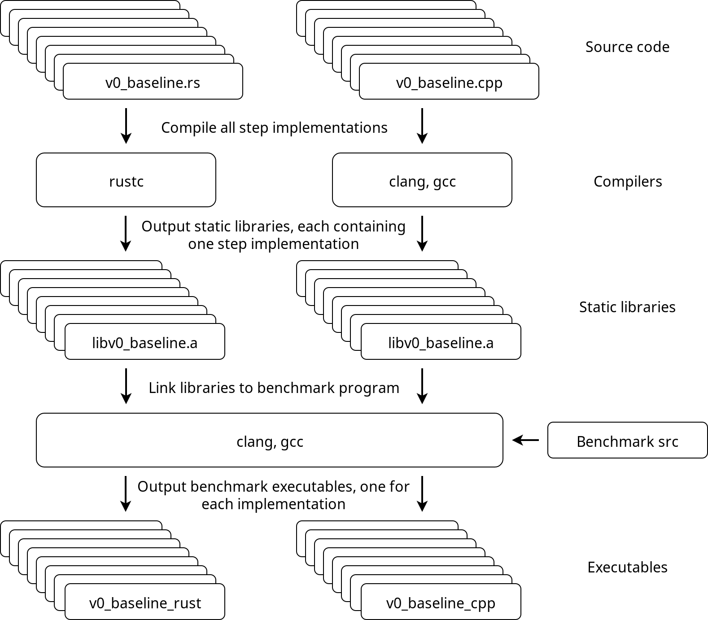

Introduction
In this tutorial, we will implement a Rust program that attempts to utilize 100% of the theoretical capacity of three relatively modern, mid-range CPUs.
We'll use an existing, highly efficient C++ implementation as a reference point to compare how our Rust program is doing.
We start with a simple baseline solution of 3 nested for-loops, and keep improving on the baseline solution incrementally, implementing 8 versions in total, until the program is going so fast it can hardly go faster.
We'll approach the problem from the point of view of a C++ programmer who already knows how the reference implementation solves the problem, but is interested in an approach using the Rust language.
Writing a program that pushes the CPU to its limits requires some understanding of the underlying hardware, which occasionally means reading the output of a compiler and using low-level intrinsics. I encourage you to also study the reference implementation materials, or at least keep them close by as we will be referencing to those materials quite often. The reference materials explain many important concepts very clearly, with intuitive visualizations that show why each incremental improvement makes the hardware execute the program faster.
Note that most of the optimization tricks shown in this tutorial are merely Rust-adaptations of the original C++ solutions.
Interestingly, this does not require as much unsafe-blocks as one would initially assume.
As we will see in this tutorial, safe Rust can be just as fast as a highly optimized C++ program.
The program
The program we will implement and improve on, is an Θ(n³) algorithm for a graph problem, which is described in more detail here as the "shortcut problem".
All input will consist of square matrices containing n rows and columns of single precision floating point numbers.
The reference implementations are all defined in functions called step and provide one baseline implementation with 7 incrementally improved versions of step.
We will implement 8 different step functions in Rust, each aiming to reach the performance of its corresponding C++ implementation.
It is important to note that we assume the algorithm we are using is the best available algorithm for this task. The algorithm will stay the same in all implementations, even though we will be heavily optimizing those implementations. In other words, the asymptotic time complexity will always remain at Θ(n³), but we will be doing everything we can to reduce the constant factors that affect the running time.
Incremental improvements
Here is a brief summary of all 8 versions of the step function that we will be implementing.
All implementations will be compiled as static libraries that provide a function called step, with C-language linkage.
Those static libraries will be linked to the benchmarking program that generates the data consisting of random floats and calls step with the generated data, while recording the amount of time spent executing the function.
| Library | Original | C++ | Rust |
|---|---|---|---|
v0_baseline | v0 | .cpp | .rs |
v1_linear_reading | v1 | .cpp | .rs |
v2_instr_level_parallelism | v2 | .cpp | .rs |
v3_simd | v3 | .cpp | .rs |
v4_register_reuse | v4 | .cpp | .rs |
v5_more_register_reuse | v5 | .cpp | .rs |
v6_prefetch | v6 | .cpp | .rs |
v7_cache_reuse | v7 | .cpp | .rs |
v0: Baseline
Simple solution with 3 nested for loops.
v1: Linear reading
Copy the input matrix and store its transpose in row-major order, enabling a linear memory access pattern also for the columns of the input matrix.
v2: Instruction level parallelism
Break instruction dependency chains in the innermost loop, increasing instruction throughput due to instruction level parallelism.
v3: SIMD
Pack all values of the input matrix, and its transpose, row-wise into SIMD vector types and use SIMD instructions explicitly, reducing the total amount of required instructions.
v4: Register reuse
Read the input and its transpose in 3-row blocks of SIMD vectors and compute 9 results for each combination of vector pairs in the block, reducing the amount of required memory accesses.
v5: More register reuse
Reorder the input matrix and its transpose by packing the data into SIMD vectors vertically, instead of horizontally. Read the vertically ordered data row-wise in pairs of 2 vectors, create 4 different permutations from the SIMD vector elements and compute 8 results for each pair, further reducing the amount of required memory accesses.
v6: Prefetch
Add prefetch hint instructions to take advantage of vacant CPU execution ports that are reserved for integer operations (since we are mostly using floating point arithmetic).
v7: Cache reuse
Add a Z-order curve memory access pattern and process input in multiple passes one vertical stripe at a time, slightly improving data locality from cache reuse.
Compilation infrastructure
Here's an approximate overview of the benchmark program and how everything is tied together.

Calling Rust functions from C++
Before we begin implementing our Rust versions of the step function, we need to create some kind of interface the C++ benchmark program can interact with.
We'll be using the C-language foreign function interface to define a small wrapper function through which the C++ code can pass data by raw pointers to the Rust-program.
C interface
Now, consider the following C++ declaration of the step function:
extern "C" {
void step(float*, const float*, int);
}
We would like to implement a Rust function with a matching signature and name, such that when we compile our implementation as a static library, the linker will happily use our Rust step function as if it was originally written in C or C++.
Since Rust provides safer primitives built on raw pointers, we would prefer to use these primitives and avoid handling raw pointers where possible.
Therefore, we implement the algorithm logic in a private Rust function called _step, which we'll define shortly, and expose its functionality through a public, thin C wrapper:
#[no_mangle]
pub extern "C" fn step(r_raw: *mut f32, d_raw: *const f32, n: i32) {
let d = unsafe { std::slice::from_raw_parts(d_raw, (n * n) as usize) };
let mut r = unsafe { std::slice::from_raw_parts_mut(r_raw, (n * n) as usize) };
_step(&mut r, d, n as usize);
}
Let's break that down.
We use the compile-time no_mangle attribute to instruct the compiler to retain the symbol name of the function so that the linker can find it in the static library:
#[no_mangle]
We declare a Rust function called step with public visibility, using the C-language ABI, that accepts 3 arguments:
pub extern "C" fn step(r_raw: *mut f32, d_raw: *const f32, n: i32) {
The arguments are one mutable and one immutable raw pointer to single precision floating point numbers, and one 32-bit integer.
We expect r_raw and d_raw to be non-null, aligned to the size of f32 and initialized with n * n elements.
Proper alignment will be asserted at runtime when we run all our implementations in debug mode, before doing the actual benchmarking.
In order to dereference the raw pointers, we need to use unsafe blocks to tell the Rust compiler we expect the pointers to always be valid.
The compiler cannot know if the pointers are null, uninitialized or whether the underlying memory might even be deallocated by someone else, before the step call terminates.
However, we know that none of these should be possible, since the parent program will properly initialize the data and block on the step call before the vectors go out of scope and get destroyed along with the data.
We can now rest assured that the given data will always be properly allocated and initialized.
Preferably, we would let the Rust compiler take care of this kind of memory safety analysis for us, which we can do by wrapping the pointers into slices. Slices are Rust primitive types which provide a dynamically-sized view into a block of memory, basically a pointer with a length. This plays a fundamental part in the array access bounds checks the compiler will be inserting every time it is unable to check index values at compile time. If the compiler can assert at compile time that no access can be out of bounds, e.g. if we are using an iterator to access all elements of the slice, the compiler will (should) elide all bounds checks.
Now, back to converting the raw pointers into slices.
First, we construct an immutable slice of length n * n, starting at the address pointed by d_raw:
let d = unsafe { std::slice::from_raw_parts(d_raw, (n * n) as usize) };
Then, we wrap r_raw also into a slice, but declare it mutable to allow writing into its memory block:
let mut r = unsafe { std::slice::from_raw_parts_mut(r_raw, (n * n) as usize) };
Now we have two "not-unsafe" Rust primitive types that point to the same memory blocks as the pointers passed down by the C++ program calling our step function.
We can proceed by calling the actual Rust implementation of the step algorithm:
_step(&mut r, d, n as usize);
The implementation of _step is what we will be heavily working on.
We'll take a look at the first version in the next chapter.
C++ does not know how to panic
We are almost done, but need to take care of one more thing.
Rust runtime exceptions are called panics, and a common implementation is stack unwinding, which results in a stack trace.
Letting a panic unwind across the ABI into foreign code is undefined behaviour, which we naturally want to avoid whenever possible.
If an unwinding panic occurs during a call to _step, we try to catch the panic and instead print a small error message to the standard error stream, before we return control to the parent program:
#[no_mangle]
pub extern "C" fn step(r_raw: *mut f32, d_raw: *const f32, n: i32) {
let result = std::panic::catch_unwind(|| {
let d = unsafe { std::slice::from_raw_parts(d_raw, (n * n) as usize) };
let mut r = unsafe { std::slice::from_raw_parts_mut(r_raw, (n * n) as usize) };
_step(&mut r, d, n as usize);
});
if result.is_err() {
eprintln!("error: rust panicked");
}
}
The || { } expression is Rust for an anonymous function that takes no arguments.
Our Rust program now has a C interface that the C++ benchmark program can call.
To avoid repetition, we wrap it into a Rust macro create_extern_c_wrapper.
To create a C interface named step that wraps a Rust implementation named _step, we simply evaluate the macro:
create_extern_c_wrapper!(step, _step);
Notice the exclamation mark, which is Rust syntax for evaluation compile-time macros.
Catching a panic here is also important for debugging.
During testing, we will compile all implementations using the -C debug-assertions flag, which enables debug_assert macros at runtime, even in optimized build.
Specifically, this allows us e.g. to check that the given raw pointers are always properly aligned to f32, before we wrap then into Rust slices.
Baseline
Our first version will be little more than three simple, nested for-loops.
This serves as an initial starting point, on top of we will gradually add more complexity, which should greatly improve the performance of our program.
C++ copy-paste
Let's start by implementing the single-threaded version of the algorithm.
Recall how in the previous chapter we defined the C interface function step that wraps input pointers into slices and passes those slices to a Rust function called _step.
One low-effort approach to implement _step is converting the C++ reference solution line by line into valid Rust syntax:
fn _step(r: &mut [f32], d: &[f32], n: usize) {
for i in 0..n {
for j in 0..n {
let mut v = std::f32::INFINITY;
for k in 0..n {
let x = d[n*i + k];
let y = d[n*k + j];
let z = x + y;
v = v.min(z);
}
r[n*i + j] = v;
}
}
}
In addition to being very inefficient, this implementation has several Rust-specific problems that we will address in the upcoming chapters.
But first, let's assume this really is our best idea so far and think about how to parallelize this.
In the C++ reference solution, each iteration of the outermost for-loop is distributed into parallel threads by using a #pragma omp parallel for compile time macro from the OpenMP library.
We don't have such macros in Rust, and even if we would start implementing some kind of thread pool with standard library threads or use some ready-made data parallelism solution, our problem will always be variable r.
Since mutable references cannot be aliased, only one mutable reference to r can ever exist, which makes our current idea inherently sequential and unusable.
Borrowing
Before continuing, let's talk a bit about reference borrowing, which is a fundamental part of how Rust implements thread safety.
When we pass r into _step from the extern wrapper function, we have to tell the compiler we are about to transfer a mutable reference r into the scope of _step from the scope of step:
_step(&mut r, d, n as usize);
In Rust this is called a mutable borrow.
Mutable borrows cannot be aliased, which means it is not possible to have more than one mutable reference to r within one scope at a time.
Immutable borrows, on the other hand, may be aliased.
Therefore, we can have an arbitrary amount of immutable references to slice d in concurrently executing threads, but it is not possible to do the same for slice r.
While this effectively eliminates the possibility of data races already at compile time, we need to think a bit more about how to properly distribute the mutable data of r into concurrent threads.
A parallelizable approach
We will solve this problem by partitioning r into non-overlapping, mutable subslices, and give ownership of each subslice to the thread that will write its results into that particular piece of memory.
To encapsulate one unit of work for one thread, we replace the outermost for-loop by a function which captures all immutable state, slice d, by reference from the enclosing scope, and accepts a single, mutable row of r as an argument:
// Function: for some row i and every column j in d,
// compute n results into r (r_row)
let step_row = |(i, r_row): (usize, &mut [f32])| {
for (j, res) in r_row.iter_mut().enumerate() {
let mut v = std::f32::INFINITY;
for k in 0..n {
let x = d[n*i + k];
let y = d[n*k + j];
let z = x + y;
v = v.min(z);
}
*res = v;
}
};
Note how res will always be equal to r[n*i + j].
In order to use this function on the result slice r, we must first partition r into rows of length n.
Rust slices have a builtin method chunks_mut, which will partition the slice into non-overlapping, mutable subslices of a given length.
If we want to partition r into mutable rows, each containing n elements, we can get an iterator over such mutable, row chunks with:
r.chunks_mut(n)
If we enumerate the iterator, we will get the original row indexes from 0 to n-1, and all that remains is to apply step_row on each (index, row_chunk) pair:
r.chunks_mut(n)
.enumerate()
.for_each(step_row);
The reason why we took this approach is that by explicitly partitioning r into new, mutable subslices, the compiler can pass ownership of these subslices to other scopes, without affecting the validity of other subslices.
This allows us e.g. to implement a thread pool that executes step_row on each r_row subslice in parallel.
Fortunately, there's already a crate for that.
All we have to do is to replace chunks_mut with its parallel counterpart par_chunks_mut, which creates concurrent threads that can be used to apply step_row to each row chunk in parallel, in a work-stealing manner, until all rows have been processed:
r.par_chunks_mut(n)
.enumerate()
.for_each(step_row);
Benchmark
Let's run some benchmarks.
We'll be using randomly generated input of size n = 6000 and run the step function with 4 threads on 4 cores for a single iteration.
We measure the total running time in seconds and instructions per cycle (IPC).
Here is a more detailed specification of the benchmark parameters and CPU.
The C++ reference implementation will be compiled with Clang and GCC, so we'll be running 3 benchmarks in total.
Here are the results:
| Implementation | Compiler | Time (s) | IPC |
|---|---|---|---|
C++ v0 | gcc 7.4.0-1ubuntu1 | 289 | 0.39 |
C++ v0 | clang 6.0.0-1ubuntu2 | 297 | 0.28 |
Rust v0 | rustc 1.38.0-nightly | 285 | 0.78 |
All step functions take almost 300 seconds to complete when n = 6000.
There seems to be some differences in the amount of instructions executed at each cycle.
To find answers, we need to take a look at what the compilers produced for the innermost loop of the step function.
Assembly
gcc
Minimal loop that corresponds to a for loop in the source code, iterating one element at a time.
See here for a detailed explanation on how it relates to the C++ code.
LOOP:
vmovss xmm0,DWORD PTR [rdx+rax*1]
vaddss xmm0,xmm0,DWORD PTR [rcx+rax*1]
add rax,0x4
vminss xmm1,xmm0,xmm1
cmp rax,rsi
jne LOOP
clang
Same as the gcc single element loop but it is unrolled for 4 iterations.
Note how the loop register r8 is incremented by 4 after each iteration, and that the memory addresses from where we are loading 32-bit values are offset by r8*4 minus 12, 8, 4, and 0.
LOOP:
vmovss xmm2,DWORD PTR [rdi+r8*4-0xc]
vmovss xmm3,DWORD PTR [rdi+r8*4-0x8]
vaddss xmm2,xmm2,DWORD PTR [r15+r8*4-0xc]
vaddss xmm3,xmm3,DWORD PTR [r15+r8*4-0x8]
vminss xmm1,xmm2,xmm1
vminss xmm1,xmm3,xmm1
vmovss xmm2,DWORD PTR [rdi+r8*4-0x4]
vaddss xmm2,xmm2,DWORD PTR [r15+r8*4-0x4]
vminss xmm1,xmm2,xmm1
vmovss xmm2,DWORD PTR [rdi+r8*4]
vaddss xmm2,xmm2,DWORD PTR [r15+r8*4]
vminss xmm1,xmm2,xmm1
add r8,0x4
cmp rbp,r8
jne LOOP
rustc
This looks like the gcc single element loop, but there is something extra going on.
What we see here is array bounds checking before loading values from memory and a NaN check before updating the intermediate result (mutable variable v in the code).
LOOP:
cmp rsi,rdx
jae 137
cmp rax,rdx
jae 146
mov rdi,QWORD PTR [rbx]
vmovss xmm2,DWORD PTR [rdi+rsi*4]
vaddss xmm2,xmm2,DWORD PTR [rdi+rax*4]
vminss xmm3,xmm2,xmm1
vcmpunordss xmm1,xmm1,xmm1
vblendvps xmm1,xmm3,xmm2,xmm1
add rax,r8
inc rsi
dec rbp
jne LOOP
Let's look at it in smaller chunks.
Here we do bounds checking for rsi and rax, jumping out of the loop and starting a panic in case they have reached the threshold specified in rdx.
We can also see that rdi is loaded from memory at each iteration even though it stays constant in this loop.
The register is used when loading two f32 values from memory, so it is probably also related to bounds checking in some way.
cmp rsi,rdx
jae 137
cmp rax,rdx
jae 146
mov rdi,QWORD PTR [rbx]
Here is the useful stuff we want to do, load two f32s, add them, and update the current minimum.
vmovss xmm2,DWORD PTR [rdi+rsi*4]
vaddss xmm2,xmm2,DWORD PTR [rdi+rax*4]
vminss xmm3,xmm2,xmm1
However, instead of keeping the current minimum always in xmm1, the compiler uses a temporary register xmm3 for checking that the computed value is not NaN before writing it into xmm1.
It seems that f32::min enforces a NaN-check (x < y || y != y) to comply with IEEE standards, which might be causing these extra instructions:
vcmpunordss xmm1,xmm1,xmm1
vblendvps xmm1,xmm3,xmm2,xmm1
The reason why these extra instructions did not affect the running time, despite leading to an increased amount of instructions per cycle, is probably because the CPU was sitting idle most of the time, waiting for memory accesses to complete.
We are currently using a very poor memory access pattern by reading d column-wise.
That's what we're going to fix in the next chapter.
Linear reading
To enable a linear memory access pattern, the reference solution introduces a Θ(n²) preprocessing step that allocates additional space for storing the transpose of d in row-major order.
This allows us to read the columns of d linearly, using fully packed cache lines on each read.
The easiest way of allocating memory on the heap for contiguous elements is probably by creating a vector, which is a struct containing a pointer, size, and length.
We use the std::vec compile-time macro to create a mutable vector of length n * n, with all elements initialized to the value 0.0, and then fill it with the transpose of d.
Note that there is no need to annotate the type of the vector, since f32 is inferred from context:
// Transpose of d
let mut t = std::vec![0.0; n * n];
// Function: for some column j in d,
// copy all elements of that column into row i in t (t_row)
let transpose_column = |(j, t_row): (usize, &mut [f32])| {
for (i, x) in t_row.iter_mut().enumerate() {
*x = d[n*i + j];
}
};
// Copy all columns of d into rows of t in parallel
t.par_chunks_mut(n)
.enumerate()
.for_each(transpose_column);
Now all columns of d have been stored as rows in t, and all we have to do is to iterate over all row pair combinations of d and t.
As previously, we partition r into n non-overlapping, mutable rows such that each thread is working on one row at a time:
// Function: for some row i in d and all rows t,
// compute n results into row i in r (r_row)
let step_row = |(i, r_row): (usize, &mut [f32])| {
for (j, res) in r_row.iter_mut().enumerate() {
let mut v = std::f32::INFINITY;
for k in 0..n {
let x = d[n*i + k];
let y = t[n*j + k];
let z = x + y;
v = v.min(z);
}
*res = v;
}
};
// Partition r into rows containing n elements,
// and apply step_row on all rows in parallel
r.par_chunks_mut(n)
.enumerate()
.for_each(step_row);
Benchmark
We'll use the same settings as in v0.
| Implementation | Compiler | Time (s) | IPC |
|---|---|---|---|
C++ v1 | gcc 7.4.0-1ubuntu1 | 60.5 | 1.54 |
C++ v1 | clang 6.0.0-1ubuntu2 | 60.5 | 1.00 |
Rust v1 | rustc 1.38.0-nightly | 114.6 | 2.11 |
The linear memory access pattern helps a lot here, compared to what we had in the previous version.
However, the Rust program is struggling to keep up, executing twice the amount of instructions per cycle as the C++ program while being almost two times slower.
In the previous chapter, we talked about array bounds checking and NaN checks not affecting the running time due to a bad memory access pattern.
We fixed the memory access pattern but now the extra instructions are starting to slow us down.
Let's look at the most recent output from rustc to see these extra instructions.
This time, we skip gcc and clang, because they produced almost the same output as in v0.
rustc
Not much has changed from v0, except that there is even more registers involved in doing bounds checking.
LOOP:
cmp rax,rdx
jae 13e
mov rcx,QWORD PTR [rbx+0x10]
cmp rcx,rsi
jbe 150
mov rcx,QWORD PTR [rbx]
mov r10,QWORD PTR [r15]
vmovss xmm2,DWORD PTR [r10+rax*4]
vaddss xmm2,xmm2,DWORD PTR [rcx+rsi*4]
vminss xmm3,xmm2,xmm1
vcmpunordss xmm1,xmm1,xmm1
vblendvps xmm1,xmm3,xmm2,xmm1
inc rsi
inc rax
dec rdi
jne LOOP
Running the Rust program benchmark with perf-record suggests that a significant amount of the running time is spent doing NaN checks with vcmpunordss and vblendvps.
Dealing with the NaN check
Let's remove the NaN checks by replacing f32::min in the inner loop by a simple if-else expression:
for k in 0..n {
let x = d[n*i + k];
let y = t[n*j + k];
let z = x + y;
v = if v < z { v } else { z };
}
Compiling and checking the output we see that the NaN checks are gone from our loop:
LOOP:
cmp rax,rdx
jae 133
mov rcx,QWORD PTR [rbx+0x10]
cmp rcx,rsi
jbe 145
mov rcx,QWORD PTR [rbx]
mov r10,QWORD PTR [r15]
vmovss xmm2,DWORD PTR [r10+rax*4]
vaddss xmm2,xmm2,DWORD PTR [rcx+rsi*4]
vminss xmm1,xmm1,xmm2
inc rsi
inc rax
dec rdi
jne LOOP
Benchmarking the Rust program shows that the running time also improved quite a lot:
| Implementation | Compiler | Time (s) | IPC |
|---|---|---|---|
C++ v1 | gcc 7.4.0-1ubuntu1 | 60.5 | 1.54 |
C++ v1 | clang 6.0.0-1ubuntu2 | 60.5 | 1.00 |
Rust v1 | rustc 1.38.0-nightly | 60.8 | 3.43 |
What about the array bounds checks?
Our mid-range CPU seems to be handling them without any problems even in the most performance critical loop.
However, the bounds checks are certainly not free, as we can see from the amount of IPC.
The C++ implementation of v1 is a proof that it is possible to solve the problem with significantly less instructions.
On other hand, we don't want to remove the bounds checks completely, since we'd prefer to use as little unsafe Rust as possible.
Dealing with the bounds checks
Our solution is similar to the preprocessing step of computing the transpose of d:
We will perform a bit of extra work outside the loop to remove a lot of work from inside the loop.
If we extract one row of d and one row of t as subslices before the inner loop starts, the compiler will have a chance to assert that the starting and ending index of the subslices are within the bounds of the slices we extract the subslices from:
let step_row = |(i, r_row): (usize, &mut [f32])| {
// Get a view of row i of d as a subslice
let d_row = &d[n*i..n*(i+1)];
for (j, res) in r_row.iter_mut().enumerate() {
// Same for row j in t
let t_row = &t[n*j..n*(j+1)];
let mut v = std::f32::INFINITY;
for k in 0..n {
let x = d_row[k];
let y = t_row[k];
let z = x + y;
v = if v < z { v } else { z };
}
*res = v;
}
};
After compiling the program, we can see that the compiler still wants to check that k is in bounds.
Since rsi is incremented by 1 after each iteration, and it is used to load two f32s, it is very likely equal to our k.
LOOP:
cmp r10,rsi
je 194
vmovss xmm2,DWORD PTR [rdx+rsi*4]
vaddss xmm2,xmm2,DWORD PTR [rax+rsi*4]
inc rsi
vminss xmm1,xmm1,xmm2
cmp rcx,rsi
jne LOOP
Benchmarks show that the amount of IPC reduced significantly:
| Implementation | Compiler | Time (s) | IPC |
|---|---|---|---|
C++ v1 | gcc 7.4.0-1ubuntu1 | 60.5 | 1.54 |
C++ v1 | clang 6.0.0-1ubuntu2 | 60.5 | 1.00 |
Rust v1 | rustc 1.38.0-nightly | 60.6 | 2.02 |
Let's get all bounds checking out of the loop.
We are currently using k only for accessing every element of d_row and t_row between 0..n, so we might as well use iterators over both subslices.
If we zip them them together, there's no need for k anymore.
for (&x, &y) in d_row.iter().zip(t_row.iter()) {
let z = x + y;
v = if v < z { v } else { z };
}
After compiling the program, we can see that not only did the compiler remove the bounds checks but it also unrolled 8 iterations of the loop:
LOOP:
vmovss xmm2,DWORD PTR [r9+r15*4-0x1c]
vmovss xmm3,DWORD PTR [r9+r15*4-0x18]
vaddss xmm2,xmm2,DWORD PTR [r13+r15*4-0x1c]
vminss xmm1,xmm1,xmm2
vaddss xmm2,xmm3,DWORD PTR [r13+r15*4-0x18]
vmovss xmm3,DWORD PTR [r9+r15*4-0x14]
vaddss xmm3,xmm3,DWORD PTR [r13+r15*4-0x14]
vminss xmm1,xmm1,xmm2
vminss xmm1,xmm1,xmm3
vmovss xmm2,DWORD PTR [r9+r15*4-0x10]
vaddss xmm2,xmm2,DWORD PTR [r13+r15*4-0x10]
vminss xmm1,xmm1,xmm2
vmovss xmm2,DWORD PTR [r9+r15*4-0xc]
vaddss xmm2,xmm2,DWORD PTR [r13+r15*4-0xc]
vmovss xmm3,DWORD PTR [r9+r15*4-0x8]
vaddss xmm3,xmm3,DWORD PTR [r13+r15*4-0x8]
vminss xmm1,xmm1,xmm2
vminss xmm1,xmm1,xmm3
vmovss xmm2,DWORD PTR [r9+r15*4-0x4]
vaddss xmm2,xmm2,DWORD PTR [r13+r15*4-0x4]
vminss xmm1,xmm1,xmm2
vmovss xmm2,DWORD PTR [r9+r15*4]
vaddss xmm2,xmm2,DWORD PTR [r13+r15*4+0x0]
add r15,0x8
vminss xmm1,xmm1,xmm2
cmp rax,r15
jne LOOP
Recall how clang unrolled the loop in v0 in an exactly similar way.
Since our program is still memory bottlenecked, the unrolling does not affect the running time.
However, it does reduce the total amount of IPC:
| Implementation | Compiler | Time (s) | IPC |
|---|---|---|---|
C++ v1 | gcc 7.4.0-1ubuntu1 | 60.5 | 1.54 |
C++ v1 | clang 6.0.0-1ubuntu2 | 60.5 | 1.00 |
Rust v1 | rustc 1.38.0-nightly | 60.6 | 0.92 |
The reason for this is that we have more instructions doing the useful stuff (e.g. loading memory vmovss, addition vaddss, and computing minimums vminss) than loop related instructions such as comparisons and jumps.
Compare this to the gcc single element loop of v0.
iter all the things
If we succeeded in eliminating k from the innermost loop by using iterators, can we remove all loop variables with iterators?
We are using chunks_mut to divide r into rows of length n, so why not do something similar with d and t but with immutable chunks instead?
Our function computes n results for a row i in d into row i in r.
We can make i redundant by chunking d into rows at the same time as r, zip the row iterators into pairs and apply step_row in parallel on all (r_row, d_row) pairs.
Inside step_row, we loop over all columns j of d, i.e. all rows j of t.
If we chunk up t into n rows of length n inside step_row, we can zip up that iterator with row i of r and we have made index j redundant.
Finally, we wrap our if-else minimum into a function and put it into our toolbox:
#[inline(always)]
pub fn min(x: f32, y: f32) -> f32 {
if x < y { x } else { y }
}
Here's the final version of v1 version of step_row:
// Function: for some row i in d (d_row) and all rows t (t_rows),
// compute n results into a row in r (r_row)
let step_row = |(r_row, d_row): (&mut [f32], &[f32])| {
let t_rows = t.chunks_exact(n);
for (res, t_row) in r_row.iter_mut().zip(t_rows) {
*res = d_row.iter()
.zip(t_row)
.fold(std::f32::INFINITY, |v, (&x, &y)| min(v, x + y));
}
};
// Partition r and d into slices, each containing a single row of r and d,
// and apply the function on the row pairs
r.par_chunks_mut(n)
.zip(d.par_chunks(n))
.for_each(step_row);
Compiler output and benchmark results are not changed.
It's nice to see functional code that performs as well as a C++ program. However, as we start pushing the CPU towards its limits, we eventually have to trade away some "functional prettiness" for raw performance, e.g. by loop unrolling and using hard-coded amounts of variables.
Instruction level parallelism (ILP)
Our program does not take advantage of the fact that modern CPUs are superscalar processors, capable of executing several independent instructions simultaneously.
The problem in our v1 implementation is that each step is dependent on the previous step, caused by this part:
let z = x + y;
v = min(v, z);
We will solve this by using a simple idea from the reference solution: accumulate results into 4 independent, intermediate results and merge them only after processing the whole row.
Suppose we have some row of d, containing the elements x0, x1, x2, x3, ..., xn, and some column of d (i.e. row of t), containing the elements y0, y1, y2, y3, ..., yn.
Then, we compute results for all rows by accumulating intermediate results into 4 variables v0, v1, v2, v3 as follows:
// iteration 1
v0 = min(v0, x0 + y0);
v1 = min(v1, x1 + y1);
v2 = min(v2, x2 + y2);
v3 = min(v3, x3 + y3);
// iteration 2
v0 = min(v0, x4 + y4);
v1 = min(v1, x5 + y5);
v2 = min(v2, x6 + y6);
v3 = min(v3, x7 + y7);
// iteration 3
v0 = min(v0, x8 + y8);
v1 = min(v1, x9 + y9);
v2 = min(v2, x10 + y10);
v3 = min(v3, x11 + y11);
// etc ...
This should allow the CPU to write results into 4 independent registers for each intermediate result.
Before we can update the step_row function, we need to make sure the amount of elements on each row is always a multiple of 4 to keep the performance-critical loop free of messy, unnecessary branching.
As previously, we transpose d to allow linear reading of its columns, but have to make sure the row length of the transpose is also divisible by 4.
The preprocessing looks a bit more complicated, but is essentially the same as doing the transpose in v1, except that we copy the values of d also into vd, which is padded with std::f32::INFINITY values to make its rows divisible by 4:
const BLOCK_SIZE: usize = 4;
let blocks_per_row = (n + BLOCK_SIZE - 1) / BLOCK_SIZE;
let n_padded = blocks_per_row * BLOCK_SIZE;
// d and transpose of d with extra room at the end of each row,
// both initially filled with f32::INFINITY
let mut vd = std::vec![std::f32::INFINITY; n_padded * n];
let mut vt = std::vec![std::f32::INFINITY; n_padded * n];
// Function: for one row of vd and vt,
// copy a row at 'i' of d into vd and column at 'i' of d into vt
let preprocess_row = |(i, (vd_row, vt_row)): (usize, (&mut [f32], &mut [f32]))| {
for (j, (x, y)) in vd_row.iter_mut().zip(vt_row.iter_mut()).enumerate() {
if i < n && j < n {
*x = d[n*i + j];
*y = d[n*j + i];
}
}
};
// Partition vd and vt into rows, apply preprocessing in parallel for each row pair
vd.par_chunks_mut(n_padded)
.zip(vt.par_chunks_mut(n_padded))
.enumerate()
.for_each(preprocess_row);
Now vd contains the original d and vt contains the transpose of d, but both have been padded with extra columns to the right containing f32::INFINITYs to ensure the width of vd and vt is always divisible by 4.
Then, we partition r and vd into row chunks, zip them into row chunk pairs and apply step_row in parallel for each row of vd, writing the results into its paired result row chunk.
Each thread will compute results over all rows of vt.
// Function: for some row in vd (vd_row) and all rows in vt (vt_rows),
// compute all results for a row in r (r_row), corresponding to the row index of vd_row.
let step_row = |(r_row, vd_row): (&mut [f32], &[f32])| {
let vt_rows = vt.chunks_exact(n_padded);
// Length of a zipped iterator is the length of the shorter iterator in the zip pair so this never exceeds n
for (res, vt_row) in r_row.iter_mut().zip(vt_rows) {
// Partition both rows into chunks of size 4
// (x0, x1, x2, x3), (x4, x5, x6, x7), ...
let vd_blocks = vd_row.chunks_exact(BLOCK_SIZE);
// (y0, y1, y2, y3), (y4, y5, y6, y7), ...
let vt_blocks = vt_row.chunks_exact(BLOCK_SIZE);
// Using an array here is bit more convenient than 4 different variables, e.g. v0, v1, v2, v3
let mut block = [std::f32::INFINITY; BLOCK_SIZE];
// Accumulate all results as in v1, but 4 elements at a time
for (vd_block, vt_block) in vd_blocks.zip(vt_blocks) {
for (b, (&x, &y)) in block.iter_mut().zip(vd_block.iter().zip(vt_block)) {
*b = min(*b, x + y);
}
}
// Fold 4 intermediate values into a single minimum and assign to final result
*res = block.iter().fold(std::f32::INFINITY, |acc, &x| min(acc, x));
}
};
r.par_chunks_mut(n)
.zip(vd.par_chunks(n_padded))
.for_each(step_row);
Benchmark
We'll now compare the Rust implementation to the reference C++ version, which will be compiled with both Clang and GCC. If we run the benchmark program for a single iteration with the same parameters as previously, we get:
| Implementation | Compiler | Time (s) | IPC |
|---|---|---|---|
C++ v2 | gcc 7.4.0-1ubuntu1 | 20.8 | 2.88 |
C++ v2 | clang 6.0.0-1ubuntu2 | 44.6 | 3.23 |
Rust v2 | rustc 1.38.0-nightly | 17.0 | 2.43 |
Two interesting questions arise:
- Why is
rustcoutperforminggcc? - What on earth is
clangdoing?
Let's compare the disassembly of all 3 versions.
rustc
I omitted a portion of code above LOOP, up until label 1f0 since perf-record placed most CPU cycles between LOOP and the jb instruction that jumps to LOOP.
It looks like the compiler outsmarted us by ignoring our attempt of writing code that utilizes ILP and instead auto-vectorized our loop, which now does all the work with two 128-bit SIMD registers:
LOOP:
mov rbp,r14
add rbp,rbx
je 1f0 ; about 20 lines above LOOP
inc rcx
vmovups xmm3,XMMWORD PTR [r14+rbx*1]
vaddps xmm3,xmm3,XMMWORD PTR [r10+rbx*1]
vpermilps xmm3,xmm3,0x1b
vminps xmm2,xmm2,xmm3
add rbx,0x10
cmp rcx,rax
jb LOOP
We'll be rewriting most of our code with 256-bit vector types and instructions in v3, but let's take a look at what the compiler managed to generate here.
We load 4 consecutive f32 values from vd_row into a 128-bit vector register xmm3:
vmovups xmm3,XMMWORD PTR [r14+rbx*1]
Then we load 4 consecutive f32 values from vt_row, add those to the 4 values in xmm3 using a single SIMD add-instruction, and store the result in xmm3:
vaddps xmm3,xmm3,XMMWORD PTR [r10+rbx*1]
Using vpermilps with shuffle control 0x1b = 0b00_01_10_11 will reverse the order of 4 elements in xmm3, but I don't know why the compiler wants to use this here, especially inside the loop.
However, we are going to use these kind of SIMD register permutations ourselves later in v5 to significantly lower the total amount of memory accesses.
vpermilps xmm3,xmm3,0x1b
We use a single SIMD min-instruction for 4 f32 result values in xmm2 and 4 sums in xmm3 we got from the previous step and store the result in xmm2:
vminps xmm2,xmm2,xmm3
We increment the loop variable by 16, which will jump over 4 f32s in the next loop, and start over:
add rbx,0x10
cmp rcx,rax
jb LOOP
clang
I did not try to figure out what happens here, but it looks like a failed auto-vectorization attempt:
LOOP:
; other half with similar lines omitted
lea edx,[rax+r14*1+0x2]
movsxd rdx,edx
lea esi,[r15+r14*1+0x2]
movsxd rsi,esi
lea edi,[rax+r14*1+0x3]
movsxd rdi,edi
lea ebx,[r15+r14*1+0x3]
movsxd rbx,ebx
vmovss xmm0,DWORD PTR [r8+rdi*4]
vinsertps xmm0,xmm0,DWORD PTR [r8+rdx*4],0x10
vmovss xmm3,DWORD PTR [rbp+rbx*4+0x0]
vinsertps xmm3,xmm3,DWORD PTR [rbp+rsi*4+0x0],0x10
vaddps xmm0,xmm0,xmm3
vpmovzxdq xmm3,xmm0
vcmpltps xmm0,xmm0,xmm4
vunpcklps xmm0,xmm2,xmm0
vblendvpd xmm6,xmm6,xmm3,xmm0
vpermilps xmm7,xmm5,0xe8
vpermilps xmm4,xmm6,0xe8
add r14d,0x4
add rcx,0xffffffffffffffff
jne LOOP
gcc
GCC did not auto-vectorize anything but produced a good example of ILP:
LOOP:
lea rcx,[r10+rcx*4]
lea r8,[r8+r9*1+0x10]
nop WORD PTR cs:[rax+rax*1+0x0]
vmovss xmm0,DWORD PTR [rcx]
vaddss xmm0,xmm0,DWORD PTR [rax]
add rax,0x10
add rcx,0x10
vminss xmm1,xmm0,xmm1
vmovss xmm0,DWORD PTR [rcx-0xc]
vaddss xmm0,xmm0,DWORD PTR [rax-0xc]
vminss xmm4,xmm0,xmm4
vmovss xmm0,DWORD PTR [rcx-0x8]
vaddss xmm0,xmm0,DWORD PTR [rax-0x8]
vminss xmm3,xmm0,xmm3
vmovss xmm0,DWORD PTR [rcx-0x4]
vaddss xmm0,xmm0,DWORD PTR [rax-0x4]
vminss xmm2,xmm0,xmm2
cmp r8,rax
jne LOOP
This is what we were trying to achieve, to have 4 independent registers for updating the minimums. You can read more about it here.
We are not going to twist our Rust code so we can get a good ILP example out of it, the auto-vectorization already produced code that was more efficient than the gcc ILP example above.
However, this was just an example, and we'll be needing ILP extensively later in v4.
First, let's rewrite our code using SIMD instructions.
SIMD
In this version we will be adding explicit SIMD vector types and vector instructions to utilize CPU registers to their full width.
As we saw in v2, compilers are sometimes able to auto-vectorize simple loops.
This time, however, we will not be hoping for auto-vectorization magic, but we'll write all vector instructions directly into the code.
Since we only need a few simple instructions and are currently targeting only the x86_64 platform, we won't be pulling in any external crates.
Instead, we define our own, tiny simd-library with safe Rust wrappers around a few Intel AVX intrinsics.
We'll be using the same approach as in the reference solution, which is to pack all rows of d and t into 256-bit wide vectors (f32x8), each containing 8 single precision (f32) floats.
First, we initialize initialize two std::vec::Vec containers for d and its transpose t.
This time they will not contain f32 values, but instead SIMD vectors of 8 f32 elements:
// How many f32x8 vectors we need for all elements from a row or column of d
let vecs_per_row = (n + simd::f32x8_LENGTH - 1) / simd::f32x8_LENGTH;
// All rows and columns d packed into f32x8 vectors,
// each initially filled with 8 f32::INFINITYs
let mut vd = std::vec![simd::f32x8_infty(); n * vecs_per_row];
let mut vt = std::vec![simd::f32x8_infty(); n * vecs_per_row];
// Assert that all addresses of vd and vt are properly aligned to the size of f32x8
debug_assert!(vd.iter().all(simd::is_aligned));
debug_assert!(vt.iter().all(simd::is_aligned));
We shouldn't have to worry about proper memory alignment since std::vec::Vec by default allocates its memory aligned to the size of the type of its elements.
Just to make sure, though, we added some debug asserts that check the alignment of each address in vd and vt by using this helper:
#[inline(always)]
pub fn is_aligned(v: &f32x8) -> bool {
(v as *const f32x8).align_offset(std::mem::align_of::<f32x8>()) == 0
}
Next, we will fill every row of vd and vt with f32x8 vectors in parallel.
Each thread will read one row of d into vd and one column of d into vt in chunks of 8 elements.
We use two f32 buffers of length 8, one for rows of d (vx_tmp) and one for columns of d (vy_tmp).
Each time the buffers become full, they are converted into two f32x8 vectors and pushed to vd and vt:
// Function: for one row of f32x8 vectors in vd and one row of f32x8 vectors in vt,
// - copy all elements from row 'i' in d,
// - pack them into f32x8 vectors,
// - insert all into row 'i' of vd (vd_row)
// and
// - copy all elements from column 'i' in d,
// - pack them into f32x8 vectors,
// - insert all into row 'i' of vt (vt_row)
let pack_simd_row = |(i, (vd_row, vt_row)): (usize, (&mut [f32x8], &mut [f32x8]))| {
// For every SIMD vector at row 'i', column 'jv' in vt and vd
for (jv, (vx, vy)) in vd_row.iter_mut().zip(vt_row.iter_mut()).enumerate() {
// Temporary buffers for f32 elements of two f32x8s
let mut vx_tmp = [std::f32::INFINITY; simd::f32x8_LENGTH];
let mut vy_tmp = [std::f32::INFINITY; simd::f32x8_LENGTH];
// Iterate over 8 elements to fill the buffers
for (b, (x, y)) in vx_tmp.iter_mut().zip(vy_tmp.iter_mut()).enumerate() {
// Offset by 8 elements to get correct index mapping of j to d
let j = jv * simd::f32x8_LENGTH + b;
if i < n && j < n {
*x = d[n * i + j];
*y = d[n * j + i];
}
}
// Initialize f32x8 vectors from buffer contents
// and assign them into the std::vec::Vec containers
*vx = simd::from_slice(&vx_tmp);
*vy = simd::from_slice(&vy_tmp);
}
};
// Fill rows of vd and vt in parallel one pair of rows at a time
vd.par_chunks_mut(vecs_per_row)
.zip(vt.par_chunks_mut(vecs_per_row))
.enumerate()
.for_each(pack_simd_row);
The nice thing is that the preprocessing we just did is by far the hardest part.
Now all data is packed into SIMD vectors and we can use reuse step_row from v1 with minimal changes:
// Function: for a row of f32x8 elements from vd,
// compute a n f32 results into r
let step_row = |(r_row, vd_row): (&mut [f32], &[f32x8])| {
let vt_rows = vt.chunks_exact(vecs_per_row);
for (res, vt_row) in r_row.iter_mut().zip(vt_rows) {
// Fold vd_row and vt_row into a single f32x8 result
let tmp = vd_row.iter()
.zip(vt_row)
.fold(simd::f32x8_infty(),
|v, (&x, &y)| simd::min(v, simd::add(x, y)));
// Reduce 8 different f32 results in tmp into the final result
*res = simd::horizontal_min(tmp);
}
};
r.par_chunks_mut(n)
.zip(vd.par_chunks(vecs_per_row))
.for_each(step_row);
Benchmark
Let's run benchmarks with the same settings as in v2, comparing our Rust program to the reference C++ version.
| Implementation | Compiler | Time (s) | IPC |
|---|---|---|---|
C++ v3 | gcc 7.4.0-1ubuntu1 | 11.5 | 1.31 |
C++ v3 | clang 6.0.0-1ubuntu2 | 11.8 | 1.37 |
Rust v3 | rustc 1.38.0-nightly | 11.4 | 1.04 |
The running times are roughly the same, but the Rust program clearly does less instructions per cycle compared to the C++ program. Let's look at the disassembly to find out why.
gcc
This is the single element loop from v0, but with 256-bit SIMD instructions and registers.
LOOP:
vmovaps ymm0,YMMWORD PTR [rcx+rax*1]
vaddps ymm0,ymm0,YMMWORD PTR [rdx+rax*1]
add rax,0x20
vminps ymm1,ymm1,ymm0
cmp rsi,rax
jne LOOP
More detailed analysis is available here.
clang
Like gcc, but for some reason there is a separate loop counter r10, instead of using r9 both for loading values and checking if the loop has ended.
The extra addition could explain the higher instructions per cycle value.
LOOP:
vmovaps ymm2,YMMWORD PTR [r15+r9*1]
vaddps ymm2,ymm2,YMMWORD PTR [r8+r9*1]
vminps ymm1,ymm1,ymm2
add r10,0x1
add r9,0x20
cmp r10,rdi
jl LOOP
rustc
No bounds checking or extra instructions, except for a separate loop counter r12.
The loop has also been unrolled for 4 iterations, which is why we might be seeing the reduction in IPC.
LOOP:
vmovaps ymm3,YMMWORD PTR [rbx+rbp*1-0x60]
vmovaps ymm4,YMMWORD PTR [rbx+rbp*1-0x40]
vmovaps ymm5,YMMWORD PTR [rbx+rbp*1-0x20]
vmovaps ymm6,YMMWORD PTR [rbx+rbp*1]
vaddps ymm3,ymm3,YMMWORD PTR [r11+rbp*1-0x60]
vminps ymm2,ymm2,ymm3
vaddps ymm3,ymm4,YMMWORD PTR [r11+rbp*1-0x40]
vminps ymm2,ymm2,ymm3
vaddps ymm3,ymm5,YMMWORD PTR [r11+rbp*1-0x20]
vminps ymm2,ymm2,ymm3
add r12,0x4
vaddps ymm3,ymm6,YMMWORD PTR [r11+rbp*1]
vminps ymm2,ymm2,ymm3
sub rbp,0xffffffffffffff80
cmp r13,r12
jne LOOP
Register reuse
In this version we are really starting to speed things up.
We will use a combination of ILP, SIMD, and loop unrolling to maximize CPU register usage in the hottest loop of the step_row function.
The Intel CPUs we are targeting have 16 AVX registers, each 256 bits wide, which match one-to-one with the f32x8 type we have been using.
We'll use the same approach as in the reference implementation, which is to load 6 f32x8 vectors from memory at each iteration and compute 9 results by combining all pairs.
Here is a visualization that shows the big picture of what is happening.
{kind=link}
First, we will group all rows of vd and vt into blocks of 3 rows.
Then, for every pair of 3-row blocks, we read 3+3 f32x8s and accumulate 9 different, intermediate f32x8 results from the cartesian product of the vector pairs.
Finally, we extract values from the results accumulated in 9 f32x8s and write them to r in correct order.
The high-level idea is the same as in our other approaches: to do a bit of extra work outside the performance critical loop in order to do significantly less work inside the loop.
Implementing step_row_block
Like in v2, we need to add some padding to make the amount of rows divisible by 3.
This time, however, we add the padding at the bottom of vd and vt, since the blocks are grouped vertically, by row.
Preprocessing is almost exactly the same as in v3, we pack all elements of d as f32x8 vectors into vd and its transpose vt, except for the few extra rows at the bottom (unless the amount of rows is already divisible by 3):
const BLOCK_HEIGHT: usize = 3;
let blocks_per_col = (n + BLOCK_HEIGHT - 1) / BLOCK_HEIGHT;
let vecs_per_row = (n + simd::f32x8_LENGTH - 1) / simd::f32x8_LENGTH;
let padded_height = BLOCK_HEIGHT * blocks_per_col;
// Preprocess exactly as in v3_simd,
// but make sure the amount of rows is divisible by BLOCK_HEIGHT
let mut vd = std::vec![simd::f32x8_infty(); padded_height * vecs_per_row];
let mut vt = std::vec![simd::f32x8_infty(); padded_height * vecs_per_row];
Since we are processing rows in blocks of 3, it is probably easiest to also write results for 3 rows at a time.
Then we can chunk vd and r into 3-row blocks, zip them up, apply step_row_block in parallel such that each thread writes results for one block of 3 rows from vd into 3 rows of r.
Inside step_row_block, every thread will chunk vt into 3-row blocks, and computes results for every pair of vt row block j and vd row block i:
// Function: For a row block vd_row_block containing 3 rows of f32x8 vectors,
// compute results for all row combinations of vd_row_block and row blocks of vt
let step_row_block = |(i, (r_row_block, vd_row_block)): (usize, (&mut [f32], &[f32x8]))| {
// Chunk up vt into blocks exactly as vd
let vt_row_blocks = vt.chunks_exact(BLOCK_HEIGHT * vecs_per_row);
// Compute results for all combinations of row blocks from vd and vt
for (j, vt_row_block) in vt_row_blocks.enumerate() {
Then, for every pair of row blocks vd_row_block and vt_row_block, we iterate over their columns, computing all 9 combinations of 3 f32x8 vectors from vd_row_block and 3 f32x8 vectors from vt_row_block, and add the results to the 9 intermediate results.
Before we go into the most performance-critical loop, we initialize 9 intermediate results to f32x8 vectors (each containing 8 f32::INFINITYs), and extract all 6 rows from both row blocks:
// Partial results for 9 f32x8 row pairs
// All as separate variables to encourage the compiler
// to keep these values in 9 registers for the duration of the loop
let mut tmp0 = simd::f32x8_infty();
let mut tmp1 = simd::f32x8_infty();
let mut tmp2 = simd::f32x8_infty();
let mut tmp3 = simd::f32x8_infty();
let mut tmp4 = simd::f32x8_infty();
let mut tmp5 = simd::f32x8_infty();
let mut tmp6 = simd::f32x8_infty();
let mut tmp7 = simd::f32x8_infty();
let mut tmp8 = simd::f32x8_infty();
// Extract all rows from the row blocks
let mut vd_rows = vd_row_block.chunks_exact(vecs_per_row);
let mut vt_rows = vt_row_block.chunks_exact(vecs_per_row);
let (vd_row_0, vd_row_1, vd_row_2) = vd_rows.next_tuple().unwrap();
let (vt_row_0, vt_row_1, vt_row_2) = vt_rows.next_tuple().unwrap();
The reason we are not using a tmp array of 9 values is that the compiler was not keeping those 9 values in registers for the duration of the loop.
Now everything is set up for iterating column-wise, computing the usual "addition + minimum" between every element in vt and vd.
This time, we will load 6 f32x8 vectors at each iteration, and compute 9 results in total.
We'll use the izip-macro from the itertools crate to get a nice, flattened tuple of row elements at each iteration:
// Move horizontally, computing 3 x 3 results for each column
// At each iteration, load two 'vertical stripes' of 3 f32x8 vectors
let rows = izip!(vd_row_0, vd_row_1, vd_row_2, vt_row_0, vt_row_1, vt_row_2);
for (&d0, &d1, &d2, &t0, &t1, &t2) in rows {
// Combine all 9 pairs of f32x8 vectors from 6 rows at every column
tmp0 = simd::min(tmp0, simd::add(d0, t0));
tmp1 = simd::min(tmp1, simd::add(d0, t1));
tmp2 = simd::min(tmp2, simd::add(d0, t2));
tmp3 = simd::min(tmp3, simd::add(d1, t0));
tmp4 = simd::min(tmp4, simd::add(d1, t1));
tmp5 = simd::min(tmp5, simd::add(d1, t2));
tmp6 = simd::min(tmp6, simd::add(d2, t0));
tmp7 = simd::min(tmp7, simd::add(d2, t1));
tmp8 = simd::min(tmp8, simd::add(d2, t2));
}
After we have iterated over all columns, we offset the block row indexes i and j so that we get a proper index mapping to the indexes of r, extract final results from all 9 intermediate results, and finally write them to r:
let tmp = [tmp0, tmp1, tmp2, tmp3, tmp4, tmp5, tmp6, tmp7, tmp8];
// Set 9 final results for all combinations of 3 rows starting at i and 3 rows starting at j
for (block_i, (r_row, tmp_row)) in r_row_block.chunks_exact_mut(n).zip(tmp.chunks_exact(BLOCK_HEIGHT)).enumerate() {
for (block_j, &tmp_res) in tmp_row.iter().enumerate() {
let res_i = i * BLOCK_HEIGHT + block_i;
let res_j = j * BLOCK_HEIGHT + block_j;
if res_i < n && res_j < n {
// Reduce one f32x8 to the final result for one pair of rows
r_row[res_j] = simd::horizontal_min(tmp_res);
}
}
}
Full step_row_block implementation
// Function: For a row block vd_row_block containing 3 rows of f32x8 vectors,
// compute results for all row combinations of vd_row_block and row blocks of vt
let step_row_block = |(i, (r_row_block, vd_row_block)): (usize, (&mut [f32], &[f32x8]))| {
// Chunk up vt into blocks exactly as vd
let vt_row_blocks = vt.chunks_exact(BLOCK_HEIGHT * vecs_per_row);
// Compute results for all combinations of row blocks from vd and vt
for (j, vt_row_block) in vt_row_blocks.enumerate() {
// Partial results for 9 f32x8 row pairs
// All as separate variables to encourage the compiler
// to keep these values in 9 registers for the duration of the loop
let mut tmp0 = simd::f32x8_infty();
let mut tmp1 = simd::f32x8_infty();
let mut tmp2 = simd::f32x8_infty();
let mut tmp3 = simd::f32x8_infty();
let mut tmp4 = simd::f32x8_infty();
let mut tmp5 = simd::f32x8_infty();
let mut tmp6 = simd::f32x8_infty();
let mut tmp7 = simd::f32x8_infty();
let mut tmp8 = simd::f32x8_infty();
// Extract all rows from the row blocks
let mut vd_rows = vd_row_block.chunks_exact(vecs_per_row);
let mut vt_rows = vt_row_block.chunks_exact(vecs_per_row);
let (vd_row_0, vd_row_1, vd_row_2) = vd_rows.next_tuple().unwrap();
let (vt_row_0, vt_row_1, vt_row_2) = vt_rows.next_tuple().unwrap();
// Move horizontally, computing 3 x 3 results for each column
// At each iteration, load two 'vertical stripes' of 3 f32x8 vectors
let rows = izip!(vd_row_0, vd_row_1, vd_row_2, vt_row_0, vt_row_1, vt_row_2);
for (&d0, &d1, &d2, &t0, &t1, &t2) in rows {
// Combine all 9 pairs of f32x8 vectors from 6 rows at every column
tmp0 = simd::min(tmp0, simd::add(d0, t0));
tmp1 = simd::min(tmp1, simd::add(d0, t1));
tmp2 = simd::min(tmp2, simd::add(d0, t2));
tmp3 = simd::min(tmp3, simd::add(d1, t0));
tmp4 = simd::min(tmp4, simd::add(d1, t1));
tmp5 = simd::min(tmp5, simd::add(d1, t2));
tmp6 = simd::min(tmp6, simd::add(d2, t0));
tmp7 = simd::min(tmp7, simd::add(d2, t1));
tmp8 = simd::min(tmp8, simd::add(d2, t2));
}
let tmp = [tmp0, tmp1, tmp2, tmp3, tmp4, tmp5, tmp6, tmp7, tmp8];
// Set 9 final results for all combinations of 3 rows starting at i and 3 rows starting at j
for (block_i, (r_row, tmp_row)) in r_row_block.chunks_exact_mut(n).zip(tmp.chunks_exact(BLOCK_HEIGHT)).enumerate() {
for (block_j, &tmp_res) in tmp_row.iter().enumerate() {
let res_i = i * BLOCK_HEIGHT + block_i;
let res_j = j * BLOCK_HEIGHT + block_j;
if res_i < n && res_j < n {
// Reduce one f32x8 to the final result for one pair of rows
r_row[res_j] = simd::horizontal_min(tmp_res);
}
}
}
}
};
r.par_chunks_mut(BLOCK_HEIGHT * n)
.zip(vd.par_chunks(BLOCK_HEIGHT * vecs_per_row))
.enumerate()
.for_each(step_row_block);
Benchmark
Let's run benchmarks with the same settings as before: n = 6000, single iteration, four threads bound to four cores.
C++ version available here.
| Implementation | Compiler | Time (s) | IPC |
|---|---|---|---|
C++ v4 | gcc 7.4.0-1ubuntu1 | 4.2 | 2.26 |
C++ v4 | clang 6.0.0-1ubuntu2 | 3.7 | 1.92 |
Rust v4 | rustc 1.38.0-nightly | 3.6 | 1.98 |
gcc
LOOP:
vmovaps ymm2,YMMWORD PTR [rdx]
vmovaps ymm14,YMMWORD PTR [rax]
lea rcx,[rdx+r8*1]
add rdx,0x20
vmovaps ymm1,YMMWORD PTR [rcx+r11*1]
vmovaps ymm0,YMMWORD PTR [rcx+rdi*1]
lea rcx,[rbx+rax*1]
add rax,0x20
vaddps ymm15,ymm2,ymm14
vmovaps ymm3,YMMWORD PTR [rcx+r15*1]
vmovaps ymm13,YMMWORD PTR [rcx+r14*1]
vminps ymm4,ymm4,ymm15
vaddps ymm15,ymm1,ymm14
vaddps ymm14,ymm0,ymm14
vminps ymm5,ymm5,ymm15
vmovaps YMMWORD PTR [rbp-0x170],ymm4
vminps ymm6,ymm6,ymm14
vaddps ymm14,ymm2,ymm3
vaddps ymm2,ymm2,ymm13
vmovaps YMMWORD PTR [rbp-0x150],ymm5
vminps ymm7,ymm7,ymm14
vaddps ymm14,ymm1,ymm3
vmovaps YMMWORD PTR [rbp-0x130],ymm6
vaddps ymm3,ymm0,ymm3
vaddps ymm1,ymm1,ymm13
vaddps ymm0,ymm0,ymm13
vminps ymm10,ymm10,ymm2
vminps ymm8,ymm8,ymm14
vmovaps YMMWORD PTR [rbp-0x110],ymm7
vminps ymm9,ymm9,ymm3
vminps ymm11,ymm11,ymm1
vminps ymm12,ymm12,ymm0
vmovaps YMMWORD PTR [rbp-0xb0],ymm10
vmovaps YMMWORD PTR [rbp-0xf0],ymm8
vmovaps YMMWORD PTR [rbp-0xd0],ymm9
vmovaps YMMWORD PTR [rbp-0x90],ymm11
vmovaps YMMWORD PTR [rbp-0x70],ymm12
cmp rax,rsi
jne LOOP
We see the expected output of 6 memory loads and 9+9 arithmetic instructions, but also quite a lot of register spilling in the middle and end of the loop.
It is unclear why the compiler decided to write intermediate results into memory already inside the loop, instead of keeping them in registers and doing the writing after the loop.
When compiling with gcc 9.1.0, these problems disappear.
clang
LOOP:
vmovaps ymm10,YMMWORD PTR [rdx+rbx*1]
vmovaps ymm11,YMMWORD PTR [rcx+rbx*1]
vmovaps ymm12,YMMWORD PTR [rax+rbx*1]
vmovaps ymm13,YMMWORD PTR [rbp+rbx*1+0x0]
vmovaps ymm14,YMMWORD PTR [rsi+rbx*1]
vmovaps ymm15,YMMWORD PTR [r8+rbx*1]
vaddps ymm0,ymm10,ymm13
vminps ymm9,ymm9,ymm0
vaddps ymm0,ymm11,ymm13
vminps ymm8,ymm8,ymm0
vaddps ymm0,ymm12,ymm13
vminps ymm7,ymm7,ymm0
vaddps ymm0,ymm10,ymm14
vminps ymm6,ymm6,ymm0
vaddps ymm0,ymm11,ymm14
vminps ymm5,ymm5,ymm0
vaddps ymm0,ymm12,ymm14
vminps ymm4,ymm4,ymm0
vaddps ymm0,ymm10,ymm15
vminps ymm3,ymm3,ymm0
vaddps ymm0,ymm11,ymm15
vminps ymm2,ymm2,ymm0
vaddps ymm0,ymm12,ymm15
vminps ymm1,ymm1,ymm0
add rdi,0x1
add rbx,0x20
cmp rdi,r10
jl LOOP
This is a fairly clean and straightforward loop with almost nothing extra.
We load 6 SIMD vectors to 256-bit registers ymm10-ymm15 and accumulate the results into 9 registers ymm1-ymm9, keeping ymm0 as a temporary variable.
Notice how rbx is incremented by 32 bytes at each iteration, which is the size of a 256-bit SIMD vector.
rustc
LOOP:
vmovaps ymm10,YMMWORD PTR [r9+rbx*1]
vmovaps ymm11,YMMWORD PTR [rax+rbx*1]
vmovaps ymm12,YMMWORD PTR [rcx+rbx*1]
vmovaps ymm13,YMMWORD PTR [r10+rbx*1]
vmovaps ymm14,YMMWORD PTR [r8+rbx*1]
vmovaps ymm15,YMMWORD PTR [rdx+rbx*1]
vaddps ymm0,ymm10,ymm13
vminps ymm9,ymm9,ymm0
vaddps ymm0,ymm10,ymm14
vminps ymm8,ymm8,ymm0
vaddps ymm0,ymm10,ymm15
vminps ymm7,ymm7,ymm0
vaddps ymm0,ymm11,ymm13
vminps ymm6,ymm6,ymm0
vaddps ymm0,ymm11,ymm14
vminps ymm5,ymm5,ymm0
vaddps ymm0,ymm11,ymm15
vminps ymm4,ymm4,ymm0
vaddps ymm0,ymm12,ymm13
vminps ymm3,ymm3,ymm0
vaddps ymm0,ymm12,ymm14
vminps ymm2,ymm2,ymm0
vaddps ymm0,ymm12,ymm15
vminps ymm1,ymm1,ymm0
add rbx,0x20
dec r13
jne LOOP
Same as clangs output, but instead of a loop counter that goes up, r13 is decremented on each iteration.
More register reuse
In this version, we will re-organize our SIMD-packed data in a way that allows us to do more arithmetic operations on the data after it has been loaded into the CPU registers.
Recall how in the previous implementation we performed 6 loads of f32x8 vectors and computed 9 f32x8 vectors worth of results in the performance critical loop.
Now, will perform 2 loads of f32x8 vectors and compute 8 f32x8 vectors worth of results.
This time, each f32x8 will contain 8 elements from 8 different rows instead of 8 elements from the same row.
As usual, the columns of vd are the rows of vt.
For each pair of f32x8 vectors from vd and vt, we will compute results for 8 different rows and 8 different columns, which means we can write 64 unique f32 results into r after each pass.
The approach is explained in detail with nice visualizations in the reference materials.
Implementation
We can keep most of the code from v4 as it is, but with some modifications.
First, we need to pack our SIMD vectors into a different order.
Fortunately, this is simply a matter of swapping some indexes.
Let's start by allocating some space for vd and vt.
Each row of f32x8s in vd corresponds to 8 rows of d, and each row of f32x8s in vt corresponds to 8 columns of d.
let vecs_per_col = (n + simd::f32x8_LENGTH - 1) / simd::f32x8_LENGTH;
// Like v4, but this time pack all elements of d into f32x8s vertically
let mut vd = std::vec![simd::f32x8_infty(); n * vecs_per_col];
let mut vt = std::vec![simd::f32x8_infty(); n * vecs_per_col];
The preprocessing will be very similar to v4, but this time we pack 8 rows and 8 columns of d into vd and vt, vertically as f32x8 vectors.
// Function: for row i of vd and row i of vt,
// copy 8 rows of d into vd and 8 columns of d into vt
let pack_simd_row_block = |(i, (vd_row, vt_row)): (usize, (&mut [f32x8], &mut [f32x8]))| {
for (jv, (vx, vy)) in vd_row.iter_mut().zip(vt_row.iter_mut()).enumerate() {
let mut vx_tmp = [std::f32::INFINITY; simd::f32x8_LENGTH];
let mut vy_tmp = [std::f32::INFINITY; simd::f32x8_LENGTH];
for (b, (x, y)) in vx_tmp.iter_mut().zip(vy_tmp.iter_mut()).enumerate() {
let j = i * simd::f32x8_LENGTH + b;
if i < n && j < n {
*x = d[n * j + jv];
*y = d[n * jv + j];
}
}
*vx = simd::from_slice(&vx_tmp);
*vy = simd::from_slice(&vy_tmp);
}
};
vd.par_chunks_mut(n)
.zip(vt.par_chunks_mut(n))
.enumerate()
.for_each(pack_simd_row_block);
Now all elements from d have been packed vertically into 8-row blocks.
Next, we will perform the step computations on all row blocks, such that the smallest unit of work for a thread is to compute 8 rows worth of results into r.
Before defining step_row_block, let's plan how we will divide the work into parallel threads.
Since one row of f32x8s in vd represents 8 rows of d, we will chunk r into blocks of 8 rows and chunk vd into single rows.
Then, we zip them up and apply step_row_block in parallel on all pairs:
// Function: for 8 rows in d, compute all results for 8 rows into r
let step_row_block = |(r_row_block, vd_row): (&mut [f32], &[f32x8])| {
// ...
};
// Chunk up r into row blocks containing 8 rows, each containing n f32s,
// and chunk up vd into rows, each containing n f32x8s
r.par_chunks_mut(simd::f32x8_LENGTH * n)
.zip(vd.par_chunks(n))
.for_each(step_row_block);
Now, for a 8-row block of d (vd_row), we need to compute 8n results into r by iterating over all 8-column blocks of d (row j of vt).
// Function: for 8 rows in d, compute all results for 8 rows into r
let step_row_block = |(r_row_block, vd_row): (&mut [f32], &[f32x8])| {
// Chunk up vt into rows, each containing n f32x8 vectors,
// exactly as vd_row
for (j, vt_row) in vt.chunks_exact(n).enumerate() {
// Intermediate results for 8 rows
let mut tmp = [simd::f32x8_infty(); simd::f32x8_LENGTH];
// ...
In the innermost loop, we loop over a pair of rows vd_row and vt_row.
For each pair of f32x8 vectors, we will compute 3 different permutations of the vector elements for vd_row and 1 permutation for vt_row.
Then, combining all permuted f32x8s, we accumulate 64 unique results for 8 rows and 8 columns of d.
We'll define a helper function simd::swap for inserting intrinsic functions that permute the elements of a f32x8.
// Iterate horizontally over both rows,
// permute elements of each `f32x8` to create 8 unique combinations,
// and compute 8 minimums from all combinations
for (&d0, &t0) in vd_row.iter().zip(vt_row) {
// Compute permutations of f32x8 elements
// 2 3 0 1 6 7 4 5
let d2 = simd::swap(d0, 2);
// 4 5 6 7 0 1 2 3
let d4 = simd::swap(d0, 4);
// 6 7 4 5 2 3 0 1
let d6 = simd::swap(d4, 2);
// 1 0 3 2 5 4 7 6
let t1 = simd::swap(t0, 1);
// Compute 8 independent, intermediate results for 8 rows
tmp[0] = simd::min(tmp[0], simd::add(d0, t0));
tmp[1] = simd::min(tmp[1], simd::add(d0, t1));
tmp[2] = simd::min(tmp[2], simd::add(d2, t0));
tmp[3] = simd::min(tmp[3], simd::add(d2, t1));
tmp[4] = simd::min(tmp[4], simd::add(d4, t0));
tmp[5] = simd::min(tmp[5], simd::add(d4, t1));
tmp[6] = simd::min(tmp[6], simd::add(d6, t0));
tmp[7] = simd::min(tmp[7], simd::add(d6, t1));
}
When we are done with the loop, we need to take care when extracting results from the 8 intermediate f32x8 results accumulated into tmp to make sure the indexes are mapped correctly back to r.
Since tmp contains 8 rows of f32x8 vectors, we need to extract 64 f32s into a 8-by-8 block in r.
The tricky part is that we have to somehow undo all the permutations.
Let's use a fixed, two-dimensional indexing pattern for writing f32s into a 8-by-8 block in r_row_block and figure out later how to read from the correct indexes in tmp.
We chunk r_row_block into 8 rows of length n and enumerate the rows by tmp_i.
Then we iterate over 8 elements starting at j * 8 of each row tmp_i in r_row_block and enumerate them by tmp_j, where j is the index of vt_row in vt.
Now we need to extract 64 f32 results from tmp and write them to row tmp_i and column tmp_j in the sub-block of 64 f32s in r_row_block, while taking into account that the elements in tmp are permuted.
Consider this figure, and the 8-by-8 block on the left which shows the indexes of all elements in vv, i.e. our tmp.
Blue indexes on the left side of the plus sign equals tmp_i and orange indexes on the right side of the plus sign equals tmp_j.
If we permute the elements of rows with odd indexes by simd::swap(v, 1), you can see that the tmp_j indexes will follow 0..8 on every row.
More importantly, we can now retrieve the result for row tmp_i at column tmp_j from tmp at row tmp_i XOR tmp_j from element tmp_j.
{kind=link}
// Swap elements of f32x8s at odd indexes to enable a linear iteration
// pattern for index tmp_j when extracting elements
for i in (1..simd::f32x8_LENGTH).step_by(2) {
tmp[i] = simd::swap(tmp[i], 1);
}
// Set 8 final results (i.e. 64 f32 results in total)
for (tmp_i, r_row) in r_row_block.chunks_exact_mut(n).enumerate() {
for tmp_j in 0..simd::f32x8_LENGTH {
let res_j = j * simd::f32x8_LENGTH + tmp_j;
if res_j < n {
let v = tmp[tmp_i ^ tmp_j];
let vi = tmp_j as u8;
r_row[res_j] = simd::extract(v, vi);
}
}
}
Full step_row_block implementation
// Function: for 8 rows in d, compute all results for 8 rows into r
let step_row_block = |(r_row_block, vd_row): (&mut [f32], &[f32x8])| {
// Chunk up vt into rows, each containing n f32x8 vectors,
// exactly as vd_row
for (j, vt_row) in vt.chunks_exact(n).enumerate() {
// Intermediate results for 8 rows
let mut tmp = [simd::f32x8_infty(); simd::f32x8_LENGTH];
// Iterate horizontally over both rows,
// permute elements of each `f32x8` to create 8 unique combinations,
// and compute 8 minimums from all combinations
for (&d0, &t0) in vd_row.iter().zip(vt_row) {
// Compute permutations of f32x8 elements
// 2 3 0 1 6 7 4 5
let d2 = simd::swap(d0, 2);
// 4 5 6 7 0 1 2 3
let d4 = simd::swap(d0, 4);
// 6 7 4 5 2 3 0 1
let d6 = simd::swap(d4, 2);
// 1 0 3 2 5 4 7 6
let t1 = simd::swap(t0, 1);
// Compute 8 independent, intermediate results for 8 rows
tmp[0] = simd::min(tmp[0], simd::add(d0, t0));
tmp[1] = simd::min(tmp[1], simd::add(d0, t1));
tmp[2] = simd::min(tmp[2], simd::add(d2, t0));
tmp[3] = simd::min(tmp[3], simd::add(d2, t1));
tmp[4] = simd::min(tmp[4], simd::add(d4, t0));
tmp[5] = simd::min(tmp[5], simd::add(d4, t1));
tmp[6] = simd::min(tmp[6], simd::add(d6, t0));
tmp[7] = simd::min(tmp[7], simd::add(d6, t1));
}
// Swap elements of f32x8s at odd indexes to enable a linear iteration
// pattern for index tmp_j when extracting elements
for i in (1..simd::f32x8_LENGTH).step_by(2) {
tmp[i] = simd::swap(tmp[i], 1);
}
// Set 8 final results (i.e. 64 f32 results in total)
for (tmp_i, r_row) in r_row_block.chunks_exact_mut(n).enumerate() {
for tmp_j in 0..simd::f32x8_LENGTH {
let res_j = j * simd::f32x8_LENGTH + tmp_j;
if res_j < n {
let v = tmp[tmp_i ^ tmp_j];
let vi = tmp_j as u8;
r_row[res_j] = simd::extract(v, vi);
}
}
}
}
};
// Chunk up r into row blocks containing 8 rows, each containing n f32s,
// and chunk up vd into rows, each containing n f32x8s
r.par_chunks_mut(simd::f32x8_LENGTH * n)
.zip(vd.par_chunks(n))
.for_each(step_row_block);
Benchmark
Let's run benchmarks with the same settings as before: n = 6000, single iteration, four threads bound to four cores.
C++ version available here.
| Implementation | Compiler | Time (s) | IPC |
|---|---|---|---|
C++ v5 | gcc 7.4.0-1ubuntu1 | 2.4 | 2.46 |
C++ v5 | clang 6.0.0-1ubuntu2 | 2.6 | 2.06 |
Rust v5 | rustc 1.38.0-nightly | 2.5 | 2.54 |
The lower IPC for clang might be due to lower usage of CPUs (2.5 CPUs) than in other versions (3.5 CPUs).
The reason for this is still unclear.
Assembly
All 3 compilers produced similar loops, which all load two f32x8s, perform 4 permutations, and compute 8 additions and 8 minimums.
One notable difference is that gcc performs all permutations using 32-bit and 128-bit lanes, while both clang and rustc load one register as double-precision floats and do permutations using 32-bit and 64-bit lanes.
gcc
LOOP:
vmovaps ymm2,YMMWORD PTR [rdx+rax*1]
vmovaps ymm3,YMMWORD PTR [rcx+rax*1]
add rax,0x20
vpermilps ymm0,ymm2,0xb1
vperm2f128 ymm13,ymm3,ymm3,0x1
vpermilps ymm14,ymm3,0x4e
vaddps ymm15,ymm3,ymm2
vaddps ymm3,ymm3,ymm0
vpermilps ymm1,ymm13,0x4e
vminps ymm7,ymm7,ymm3
vaddps ymm3,ymm2,ymm14
vaddps ymm14,ymm0,ymm14
vminps ymm9,ymm9,ymm15
vminps ymm10,ymm10,ymm3
vaddps ymm3,ymm2,ymm13
vaddps ymm13,ymm0,ymm13
vaddps ymm2,ymm2,ymm1
vaddps ymm0,ymm0,ymm1
vminps ymm6,ymm6,ymm14
vminps ymm11,ymm11,ymm3
vminps ymm5,ymm5,ymm13
vminps ymm8,ymm8,ymm2
vminps ymm4,ymm4,ymm0
cmp rax,r12
jne LOOP
clang
LOOP:
vmovapd ymm9,YMMWORD PTR [rax+rsi*1]
vmovaps ymm10,YMMWORD PTR [rcx+rsi*1]
vpermpd ymm11,ymm9,0x4e
vpermilpd ymm12,ymm9,0x5
vpermilpd ymm13,ymm11,0x5
vpermilps ymm14,ymm10,0xb1
vaddps ymm15,ymm9,ymm10
vminps ymm5,ymm5,ymm15
vaddps ymm9,ymm9,ymm14
vminps ymm4,ymm4,ymm9
vaddps ymm9,ymm12,ymm10
vminps ymm6,ymm6,ymm9
vaddps ymm9,ymm12,ymm14
vminps ymm3,ymm3,ymm9
vaddps ymm9,ymm11,ymm10
vminps ymm7,ymm7,ymm9
vaddps ymm9,ymm11,ymm14
vminps ymm2,ymm2,ymm9
vaddps ymm9,ymm10,ymm13
vminps ymm8,ymm8,ymm9
vaddps ymm9,ymm13,ymm14
vminps ymm1,ymm1,ymm9
add rdi,0x1
add rsi,0x20
cmp rdi,r15
jl LOOP
rustc
LOOP:
inc rdx
vmovapd ymm9,YMMWORD PTR [rcx+rax*1]
vmovaps ymm10,YMMWORD PTR [r9+rax*1]
vpermilpd ymm11,ymm9,0x5
vpermpd ymm12,ymm9,0x4e
vpermpd ymm13,ymm9,0x1b
vpermilps ymm14,ymm10,0xb1
vaddps ymm15,ymm9,ymm10
vminps ymm8,ymm8,ymm15
vaddps ymm9,ymm9,ymm14
vminps ymm7,ymm7,ymm9
vaddps ymm9,ymm11,ymm10
vminps ymm6,ymm6,ymm9
vaddps ymm9,ymm11,ymm14
vminps ymm5,ymm5,ymm9
vaddps ymm9,ymm12,ymm10
vminps ymm4,ymm4,ymm9
vaddps ymm9,ymm12,ymm14
vminps ymm3,ymm3,ymm9
vaddps ymm9,ymm10,ymm13
vminps ymm2,ymm2,ymm9
vaddps ymm9,ymm13,ymm14
vminps ymm1,ymm1,ymm9
add rax,0x20
cmp rdx,rsi
jb LOOP
Software prefetching
In this version we will attempt to take advantage of vacant CPU execution ports by inserting prefetch instructions to reduce average memory access latency in the performance critical loop.
The motivation behind this idea is explained in the reference materials.
Note that vpermpd and vpermilpd use same execution ports as vperm2f128 and vpermilps, so the reasoning holds also for clang and rustc.
Implementation
We won't be making much changes from v5 since we only want to insert 2 prefetcht0 instructions in the innermost loop.
prefetcht0 uses the strongest locality hint T0, which requests the data to be loaded into all cache levels.
The instruction is provided in the same Intel intrinsics crate we have been using for inserting SIMD instructions, where it is defined as _mm_prefetch.
Since we will be using it only for prefetching addresses containing f32x8s, we might as well wrap it into a helper function and put it in our SIMD helper module:
#[inline]
pub fn prefetch(p: *const f32x8, offset: isize) {
unsafe { _mm_prefetch(p.offset(offset) as *const i8, _MM_HINT_T0) }
}
The function takes as arguments the memory address of an f32x8, for which we want to request a cache line fetch using locality T0.
In C, p.offset(offset) would basically be equal to p + offset.
We need the unsafe expression both for using _mm_prefetch intrinsic and p.offset, but we shouldn't have to worry about memory safety so much here since we only need the offset address, the pointer will not be dereferenced.
Now that we have our prefetch-helper, we can add it to our v5 implementation.
First, we get a pair of f32x8 pointers to the current row pair vd_row and vt_row:
// Everything is exactly as in v5, but we add some prefetch instructions in the innermost loop
let step_row_block = |(r_row_block, vd_row): (&mut [f32], &[f32x8])| {
// Create const raw pointers for specifying addresses to prefetch
let vd_row_ptr = vd_row.as_ptr();
const PREFETCH_LENGTH: usize = 20;
for (j, vt_row) in vt.chunks_exact(n).enumerate() {
let vt_row_ptr = vt_row.as_ptr();
PREFETCH_LENGTH = 20 is the amount of f32x8 addresses we want to look ahead, and it was chosen empirically in the reference implementation.
We'll insert two prefetch-hints for addresses 20 elements ahead of d0 and t0 in the beginning of the innermost loop:
let mut tmp = [simd::f32x8_infty(); simd::f32x8_LENGTH];
for (col, (&d0, &t0)) in vd_row.iter().zip(vt_row).enumerate() {
// Insert prefetch hints for fetching the cache line containing
// the memory address 20 addresses ahead of the current column
simd::prefetch(vd_row_ptr, (col + PREFETCH_LENGTH) as isize);
simd::prefetch(vt_row_ptr, (col + PREFETCH_LENGTH) as isize);
let d2 = simd::swap(d0, 2);
let d4 = simd::swap(d0, 4);
let d6 = simd::swap(d4, 2);
let t1 = simd::swap(t0, 1);
tmp[0] = simd::min(tmp[0], simd::add(d0, t0));
tmp[1] = simd::min(tmp[1], simd::add(d0, t1));
tmp[2] = simd::min(tmp[2], simd::add(d2, t0));
tmp[3] = simd::min(tmp[3], simd::add(d2, t1));
tmp[4] = simd::min(tmp[4], simd::add(d4, t0));
tmp[5] = simd::min(tmp[5], simd::add(d4, t1));
tmp[6] = simd::min(tmp[6], simd::add(d6, t0));
tmp[7] = simd::min(tmp[7], simd::add(d6, t1));
}
That's about it, let's run the benchmarks. C++ version available here.
| Implementation | Compiler | Time (s) | IPC |
|---|---|---|---|
C++ v6 | gcc 7.4.0-1ubuntu1 | 2.10 | 3.20 |
C++ v6 | clang 6.0.0-1ubuntu2 | 2.33 | 2.25 |
Rust v6 | rustc 1.38.0-nightly | 2.67 | 2.77 |
Something is not right, the Rust implementation became slower compared to the previous version.
Let's look at the assembly.
gcc
LOOP:
vmovaps ymm2,YMMWORD PTR [rdx-0x280]
vmovaps ymm3,YMMWORD PTR [rax-0x280]
prefetcht0 BYTE PTR [rax]
add rax,0x20
prefetcht0 BYTE PTR [rdx]
add rdx,0x20
vpermilps ymm0,ymm2,0xb1
vperm2f128 ymm13,ymm3,ymm3,0x1
vpermilps ymm14,ymm3,0x4e
vaddps ymm15,ymm3,ymm2
vaddps ymm3,ymm3,ymm0
vpermilps ymm1,ymm13,0x4e
vminps ymm7,ymm7,ymm3
vaddps ymm3,ymm2,ymm14
vaddps ymm14,ymm0,ymm14
vminps ymm11,ymm11,ymm15
vminps ymm10,ymm10,ymm3
vaddps ymm3,ymm2,ymm13
vaddps ymm13,ymm0,ymm13
vaddps ymm2,ymm2,ymm1
vaddps ymm0,ymm0,ymm1
vminps ymm6,ymm6,ymm14
vminps ymm9,ymm9,ymm3
vminps ymm5,ymm5,ymm13
vminps ymm8,ymm8,ymm2
vminps ymm4,ymm4,ymm0
cmp rax,rcx
jne LOOP
There are two prefetch-hints prefetcht0, placed 0x280 bytes ahead of the current loop indexes in registers rdx and rax.
This equals 20 f32x8 vectors, because each f32x8 is 32 bytes and 0x280/32 = 20, as we wanted.
clang
LOOP:
prefetcht0 BYTE PTR [rcx+rdi*1]
prefetcht0 BYTE PTR [rax+rdi*1]
vmovapd ymm9,YMMWORD PTR [rcx+rdi*1-0x280]
vmovaps ymm10,YMMWORD PTR [rax+rdi*1-0x280]
vpermpd ymm11,ymm9,0x4e
vpermilpd ymm12,ymm9,0x5
vpermilpd ymm13,ymm11,0x5
vpermilps ymm14,ymm10,0xb1
vaddps ymm15,ymm9,ymm10
vminps ymm8,ymm8,ymm15
vaddps ymm9,ymm9,ymm14
vminps ymm4,ymm4,ymm9
vaddps ymm9,ymm12,ymm10
vminps ymm7,ymm7,ymm9
vaddps ymm9,ymm12,ymm14
vminps ymm3,ymm3,ymm9
vaddps ymm9,ymm11,ymm10
vminps ymm6,ymm6,ymm9
vaddps ymm9,ymm11,ymm14
vminps ymm2,ymm2,ymm9
vaddps ymm9,ymm10,ymm13
vminps ymm5,ymm5,ymm9
vaddps ymm9,ymm13,ymm14
vminps ymm1,ymm1,ymm9
add rdi,0x20
add rdx,0xffffffffffffffff
jne LOOP
rustc
LOOP:
inc rbx
vmovapd ymm9,YMMWORD PTR [r11+rsi*1-0x280]
vmovaps ymm10,YMMWORD PTR [rcx+rsi*1]
prefetcht0 BYTE PTR [r11+rsi*1]
prefetcht0 BYTE PTR [rdx+rsi*1]
vpermilpd ymm11,ymm9,0x5
vpermpd ymm12,ymm9,0x4e
vpermpd ymm13,ymm9,0x1b
vpermilps ymm14,ymm10,0xb1
vaddps ymm15,ymm9,ymm10
vminps ymm8,ymm8,ymm15
vmovaps YMMWORD PTR [rsp+0xc0],ymm8
vaddps ymm9,ymm9,ymm14
vminps ymm7,ymm7,ymm9
vmovaps YMMWORD PTR [rsp+0xe0],ymm7
vaddps ymm9,ymm11,ymm10
vminps ymm6,ymm6,ymm9
vmovaps YMMWORD PTR [rsp+0x100],ymm6
vaddps ymm9,ymm11,ymm14
vminps ymm5,ymm5,ymm9
vmovaps YMMWORD PTR [rsp+0x120],ymm5
vaddps ymm9,ymm12,ymm10
vminps ymm4,ymm4,ymm9
vmovaps YMMWORD PTR [rsp+0x140],ymm4
vaddps ymm9,ymm12,ymm14
vminps ymm3,ymm3,ymm9
vmovaps YMMWORD PTR [rsp+0x160],ymm3
vaddps ymm9,ymm10,ymm13
vminps ymm2,ymm2,ymm9
vmovaps YMMWORD PTR [rsp+0x180],ymm2
vaddps ymm9,ymm13,ymm14
vminps ymm1,ymm1,ymm9
vmovaps YMMWORD PTR [rsp+0x1a0],ymm1
add rsi,0x20
cmp rbx,rax
jb LOOP
We can see two prefetch instructions with locality hint T0, but for some reason there is also pretty bad register spilling.
This behaviour seems a bit odd, since the only thing we changed in the inner loop from v5 was to add two prefetch instructions.
Also, we can see that after writing a register into memory, the same register is not used anywhere in the loop during that iteration.
Recall how we faced the same issue in v4, which we solved by unrolling the tmp results array into separate, mutable variables.
This seemed to encourage the compiler to keep the temporary results in registers for the duration of the loop, so let's do the same also here.
Full step_row_block implementation
// Everything is mostly as in v5,
// but we add some prefetch instructions in the innermost loop,
// and unroll the tmp results array to avoid register spilling
let step_row_block = |(r_row_block, vd_row): (&mut [f32], &[f32x8])| {
// Create const raw pointers for specifying addresses to prefetch
let vd_row_ptr = vd_row.as_ptr();
const PREFETCH_LENGTH: usize = 20;
for (j, vt_row) in vt.chunks_exact(n).enumerate() {
let vt_row_ptr = vt_row.as_ptr();
let mut tmp0 = simd::f32x8_infty();
let mut tmp1 = simd::f32x8_infty();
let mut tmp2 = simd::f32x8_infty();
let mut tmp3 = simd::f32x8_infty();
let mut tmp4 = simd::f32x8_infty();
let mut tmp5 = simd::f32x8_infty();
let mut tmp6 = simd::f32x8_infty();
let mut tmp7 = simd::f32x8_infty();
for (col, (&d0, &t0)) in vd_row.iter().zip(vt_row).enumerate() {
// Insert prefetch hints for fetching the cache line containing
// the memory address 20 addresses ahead of the current column
simd::prefetch(vd_row_ptr, (col + PREFETCH_LENGTH) as isize);
simd::prefetch(vt_row_ptr, (col + PREFETCH_LENGTH) as isize);
let d2 = simd::swap(d0, 2);
let d4 = simd::swap(d0, 4);
let d6 = simd::swap(d4, 2);
let t1 = simd::swap(t0, 1);
tmp0 = simd::min(tmp0, simd::add(d0, t0));
tmp1 = simd::min(tmp1, simd::add(d0, t1));
tmp2 = simd::min(tmp2, simd::add(d2, t0));
tmp3 = simd::min(tmp3, simd::add(d2, t1));
tmp4 = simd::min(tmp4, simd::add(d4, t0));
tmp5 = simd::min(tmp5, simd::add(d4, t1));
tmp6 = simd::min(tmp6, simd::add(d6, t0));
tmp7 = simd::min(tmp7, simd::add(d6, t1));
}
let tmp = [
tmp0, simd::swap(tmp1, 1),
tmp2, simd::swap(tmp3, 1),
tmp4, simd::swap(tmp5, 1),
tmp6, simd::swap(tmp7, 1),
];
for (tmp_i, r_row) in r_row_block.chunks_exact_mut(n).enumerate() {
for tmp_j in 0..simd::f32x8_LENGTH {
let res_j = j * simd::f32x8_LENGTH + tmp_j;
if res_j < n {
let v = tmp[tmp_i ^ tmp_j];
let vi = tmp_j as u8;
r_row[res_j] = simd::extract(v, vi);
}
}
}
}
};
r.par_chunks_mut(simd::f32x8_LENGTH * n)
.zip(vd.par_chunks(n))
.for_each(step_row_block);
rustc without spilling
LOOP:
inc rbx
vmovapd ymm9,YMMWORD PTR [r11+rsi*1-0x280]
vmovaps ymm10,YMMWORD PTR [rcx+rsi*1]
prefetcht0 BYTE PTR [r11+rsi*1]
prefetcht0 BYTE PTR [rdx+rsi*1]
vpermilpd ymm11,ymm9,0x5
vpermpd ymm12,ymm9,0x4e
vpermpd ymm13,ymm9,0x1b
vpermilps ymm14,ymm10,0xb1
vaddps ymm15,ymm9,ymm10
vminps ymm4,ymm4,ymm15
vaddps ymm9,ymm9,ymm14
vminps ymm8,ymm8,ymm9
vaddps ymm9,ymm11,ymm10
vminps ymm3,ymm3,ymm9
vaddps ymm9,ymm11,ymm14
vminps ymm7,ymm7,ymm9
vaddps ymm9,ymm12,ymm10
vminps ymm2,ymm2,ymm9
vaddps ymm9,ymm12,ymm14
vminps ymm6,ymm6,ymm9
vaddps ymm9,ymm10,ymm13
vminps ymm1,ymm1,ymm9
vaddps ymm9,ymm13,ymm14
vminps ymm5,ymm5,ymm9
add rsi,0x20
cmp rbx,rax
jb LOOP
Benchmark
| Implementation | Compiler | Time (s) | IPC |
|---|---|---|---|
C++ v6 | gcc 7.4.0-1ubuntu1 | 2.10 | 3.20 |
C++ v6 | clang 6.0.0-1ubuntu2 | 2.33 | 2.25 |
Rust v6 | rustc 1.38.0-nightly | 2.16 | 3.23 |
Cache reuse
In our final version, we will attempt to increase cache locality also for data from vt, by reading f32x8 row pairs from vd and vt using a Z-order curve iteration pattern.
If you look at this animation, we will implement the last pattern to the right.
Please see the reference materials for a detailed explanation.
Implementation
This version will be an extension to v5, and we won't be using the prefetching hints seen in v6.
There won't be any changes to the performance critical loop or result extraction.
However, we need to rewrite most of the code to support the Z-order iteration pattern.
Our approach will be the same as in the reference implementation:
- Create a 2-dimensional Z-order index pattern by sorting the interleaved bits of row index
iand column indexj. - Compute partial results in vertical stripes of 500 columns.
- Extract final results from partial results.
Preparation
We start by defining some constants. We'll fix the width of all vertical stripes to 500 columns.
// How many adjacent columns to process during one pass
// Smaller numbers improve cache locality but add overhead
// from having to merge partial results
const COLS_PER_STRIPE: usize = 500;
let vecs_per_col = (n + simd::f32x8_LENGTH - 1) / simd::f32x8_LENGTH;
Then we create the 2-dimensional Z-order pattern for pairs of i and j.
We'll use the same trick as in the reference implementation, which is to use the parallel deposit intrinsic function for scattering the bits of i into odd indexed bits, j into even indexed bits, and OR the results.
We wrap it into a function z_encode and put it into our toolbox:
#[inline]
pub fn z_encode(x: u32, y: u32) -> u32 {
let odd_bits = 0x55555555;
let even_bits = 0xAAAAAAAA;
unsafe { _pdep_u32(x, odd_bits) | _pdep_u32(y, even_bits) }
}
If n would always be a power of 2, there would be no need to handle edge cases, since z_encode would always return the correct z-index.
However, when n is not a power of 2, we must make sure to skip all z-indexes that are out of bounds.
We use the same approach as in the reference solution, which is to create a vector row_pairs containing 3-tuples (z_encode(i, j), i, j) and sort it by the z-index.
When we enumerate the sorted row_pairs, we get correct z-indexes that do not include out of bounds row and column indexes.
// Build a Z-order curve iteration pattern of pairs (i, j)
// by using interleaved bits of i and j as a sort key
let mut row_pairs = std::vec![(0, 0, 0); vecs_per_col * vecs_per_col];
// Define a function that interleaves one row of indexes
let interleave_row = |(i, row): (usize, &mut [(usize, usize, usize)])| {
for (j, x) in row.iter_mut().enumerate() {
let z = z_encode(i as u32, j as u32);
*x = (z as usize, i, j);
}
};
// Apply the function independently on all rows and sort by ija
row_pairs
.par_chunks_mut(vecs_per_col)
.enumerate()
.for_each(interleave_row);
// We don't need stable sort since there are no duplicate keys
row_pairs.par_sort_unstable();
Recall how we used an 8-by-8 tmp block in previous versions to store partial results.
In this version, we'll store a tmp block for every Z-order index pair (i, j) into partial_results.
By storing tmp blocks into partial_results for every index pair, we can fairly easily load and write into the correct tmp block when we process each vertical stripe of data.
// We'll be processing the input one stripe at a time
let mut vd = std::vec![simd::f32x8_infty(); COLS_PER_STRIPE * vecs_per_col];
let mut vt = std::vec![simd::f32x8_infty(); COLS_PER_STRIPE * vecs_per_col];
// Non-overlapping working memory for threads to update their results
// When enumerated in 8 element chunks, indexes the Z-order curve keys
let mut partial_results = std::vec![simd::f32x8_infty(); vecs_per_col * vecs_per_col * simd::f32x8_LENGTH];
Computing results in vertical stripes
Now, we will compute all the results.
Note that we haven't initialized the values for vd and vt yet.
We'll do it inside the loop, one stripe at a time.
Here's a brief overview what happens during one pass over one stripe:
// Process vd and vt in Z-order one vertical stripe at a time, writing partial results in parallel
let num_vertical_stripes = (n + COLS_PER_STRIPE - 1) / COLS_PER_STRIPE;
for stripe in 0..num_vertical_stripes {
let col_begin = stripe * COLS_PER_STRIPE;
let col_end = n.min((stripe + 1) * COLS_PER_STRIPE);
// ...
// pack one stripe of vd and vt from d
// ...
// 1. load results from previous stripe
// 2. compute results for this stripe
// 3. save results for next stripe
}
The actual computation is not very different from v5, except that we are processing vd and vt in stripes.
Also, we cannot extract results before we have processed all stripes, so each thread will load and save a tmp block from partial_results for every pair of indexes i and j.
After loading one stripe of vd and vt from d, we process them in Z-order using index pairs (i, j) from row_pairs.
If we enumerate row_pairs, we also get the index of each tmp block in partial_results, so we might as well zip row_pairs with partial_results to avoid using the z-indexes directly.
We apply step_partial_block in parallel such that each thread computes results for one tmp block at index z in partial_results and index pair (i, j) at index z in row_pairs:
// Function: for a f32x8 block of partial results and indexes row i col j,
// 1. Load tmp from partial results
// 2. Accumulate results for row i and column j into tmp
// 3. Write tmp into the original partial results block
let step_partial_block = |(prev_tmp, &(_, i, j)): (&mut [f32x8], &(usize, usize, usize))| {
// Copy results from previous pass over previous stripe
let mut tmp = [simd::f32x8_infty(); simd::f32x8_LENGTH];
tmp.copy_from_slice(&prev_tmp);
// Get slices over current stripes of row i and column j
let vd_row = &vd[(COLS_PER_STRIPE * i)..(COLS_PER_STRIPE * (i + 1))];
let vt_row = &vt[(COLS_PER_STRIPE * j)..(COLS_PER_STRIPE * (j + 1))];
for (&d0, &t0) in vd_row.iter().zip(vt_row) {
let d2 = simd::swap(d0, 2);
let d4 = simd::swap(d0, 4);
let d6 = simd::swap(d4, 2);
let t1 = simd::swap(t0, 1);
tmp[0] = simd::min(tmp[0], simd::add(d0, t0));
tmp[1] = simd::min(tmp[1], simd::add(d0, t1));
tmp[2] = simd::min(tmp[2], simd::add(d2, t0));
tmp[3] = simd::min(tmp[3], simd::add(d2, t1));
tmp[4] = simd::min(tmp[4], simd::add(d4, t0));
tmp[5] = simd::min(tmp[5], simd::add(d4, t1));
tmp[6] = simd::min(tmp[6], simd::add(d6, t0));
tmp[7] = simd::min(tmp[7], simd::add(d6, t1));
}
// Store partial results (8 vecs of type f32x8) to global memory
// for processing next stripe
prev_tmp.copy_from_slice(&tmp);
};
// Process current stripe in parallel, each thread filling one `tmp` block
partial_results
.par_chunks_mut(simd::f32x8_LENGTH)
.zip(row_pairs.par_iter())
.for_each(step_partial_block);
Extracting results
After accumulating results over each vertical stripe, we need to extract all results from the partial results that are in Z-order.
First, let's replace the z-indexes in row_pairs with a linear index and sort row_pairs by (i, j) in order to get a mapping from z to the correct partial result.
This allows us to chunk r into rows indexed by i, and write all results to each row element at j by reading partial_results linearly.
// Replace ij sorting key by linear index to get a mapping to partial_results,
// then sort row_pairs by (i, j)
let replace_z_index_row = |(z_row, index_row): (usize, &mut [(usize, usize, usize)])| {
for (z, idx) in index_row.iter_mut().enumerate() {
let (_, i, j) = *idx;
*idx = (z_row * vecs_per_col + z, i, j);
}
};
let key_ij = |&idx: &(usize, usize, usize)| { (idx.1, idx.2) };
row_pairs
.par_chunks_mut(vecs_per_col)
.enumerate()
.for_each(replace_z_index_row);
row_pairs.par_sort_unstable_by_key(key_ij);
Now, row_pairs is ordered linearly, first by i then by j, such that the first element in each tuple element of row_pairs corresponds to the starting index of an 8-by-8 tmp block in partial_results.
We chunk r into 8-row blocks and read the tmp result blocks from partial_results and extract 64 f32 results exactly as in v5.
// Function: for 8 rows in r starting at row i*8,
// read partial results at z-index corresponding to each row i and column j
// and write them to r
let set_z_order_result_block = |(i, r_row_block): (usize, &mut [f32])| {
for j in 0..vecs_per_col {
// Get z-order index for row i and column j
let z = row_pairs[i * vecs_per_col + j].0 * simd::f32x8_LENGTH;
// Load tmp from z-order partial results for this i, j pair
let mut tmp = [simd::f32x8_infty(); simd::f32x8_LENGTH];
tmp.copy_from_slice(&partial_results[z..z + simd::f32x8_LENGTH]);
// Continue exactly as in v5
for k in (1..simd::f32x8_LENGTH).step_by(2) {
tmp[k] = simd::swap(tmp[k], 1);
}
for (tmp_i, r_row) in r_row_block.chunks_exact_mut(n).enumerate() {
for tmp_j in 0..simd::f32x8_LENGTH {
let res_j = j * simd::f32x8_LENGTH + tmp_j;
if res_j < n {
let v = tmp[tmp_i ^ tmp_j];
let vi = tmp_j as u8;
r_row[res_j] = simd::extract(v, vi);
}
}
}
}
};
r.par_chunks_mut(simd::f32x8_LENGTH * n)
.enumerate()
.for_each(set_z_order_result_block);
Benchmark
| Implementation | Compiler | Time (s) | IPC |
|---|---|---|---|
C++ v7 | gcc 7.4.0-1ubuntu1 | 2.04 | 2.94 |
C++ v7 | clang 6.0.0-1ubuntu2 | 2.16 | 2.20 |
Rust v7 | rustc 1.38.0-nightly | 2.25 | 2.79 |
We managed to get a small improvement compared to the Rust program from v5, but not as much as in the C++ versions.
The performance critical loop is the same as in v5, which means we cannot search for answers in the assembly code, or at least not as easily as previously.
One possible performance bottleneck could be that we sort the Z-order indexes twice in the Rust program, while it is done only once in the C++ version.
Using a better approach for Z-order encoding and decoding might help reducing the running times.
Benchmark results
All 8 implementations have so far been benchmarked on three different Intel CPUs. You can find the benchmark program on GitHub.
Benchmark parameters
- All benchmarks use an input array containing
6000 * 6000 = 36Melements, allocated and initialized before the benchmark timing starts, and destroyed after the timing has ended. - All elements of the input array are single precision floating point numbers drawn uniformly at random from
[0, 1.0). - Before compiling the single-threaded benchmark programs, all parallel libraries were explicitly disabled using compile time switches.
- When benchmarking in parallel, the parallel libraries were instructed to use 4 software threads and the benchmark process was bound with
tasksetto 4 physical cores.
Benchmark 1: Intel Xeon E3-1230 v5
- Mid-range server/workstation CPU with 4 physical cores and 8 hardware threads (hyper-threading).
- Maximum clock speed 3.8 GHz.
- Intel specifications.
- Wikichip.
Compiler versions
- C++ (GCC):
g++ 7.4.0-1ubuntu1 - C++ (Clang):
clang 6.0.0-1ubuntu2 - Rust:
rustc 1.38.0-nightly
![]xeon-single-core-img](img/Xeon-E3-1230-v5/single_core.png)
Benchmark 2: Intel i5-4690k
- Mid-range desktop CPU with 4 physical cores and 4 hardware threads (no hyper-threading).
- Overclocked to 4.3 GHz.
- Intel specifications.
Compiler versions
- C++ (GCC):
g++ 9.1.0 - C++ (Clang):
clang 8.0.1 - Rust:
rustc 1.38.0-nightly
![]i5-4690k-single-core-img](img/i5-4690k/single_core.png)
Benchmark 3: Intel i5-8250U
- Mid-range laptop CPU with 4 physical cores and 8 hardware threads.
- Maximum clock speed 3.4 GHz.
- Intel specifications.

Compiler versions
- C++ (GCC):
g++ 9.1.0 - C++ (Clang):
clang 8.0.1 - Rust:
rustc 1.38.0-nightly
![]i5-8250U-multi-core-img](img/i5-8250U/multi_core.png)